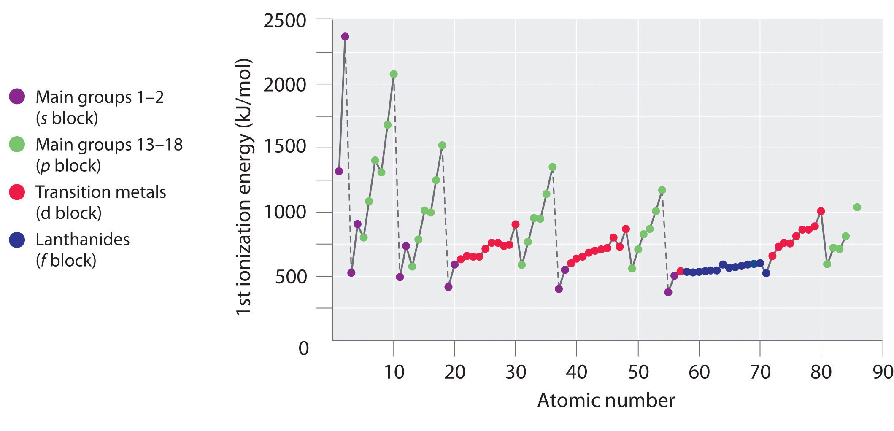
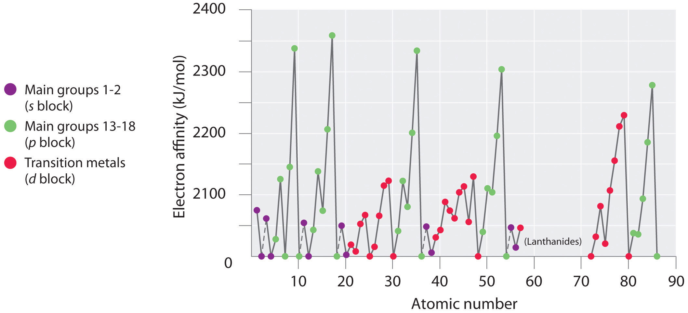
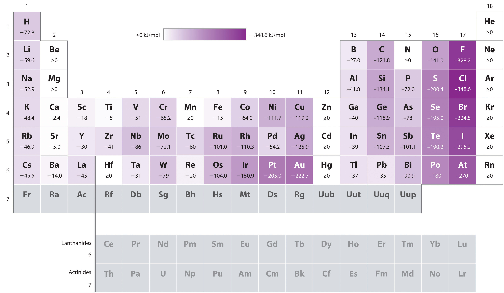
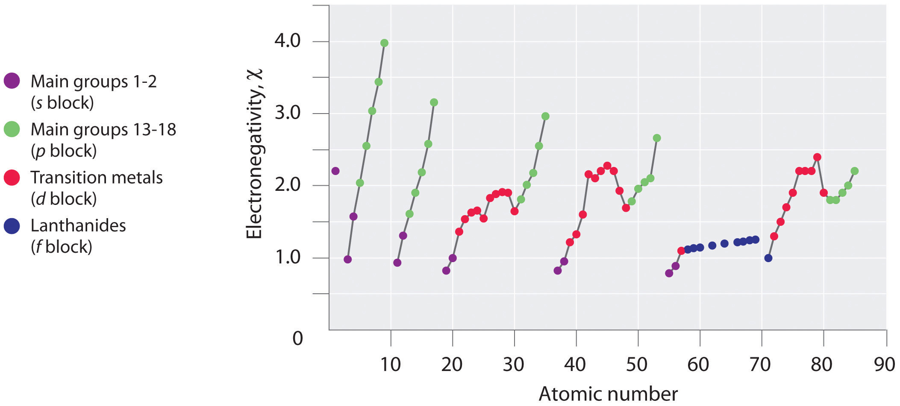
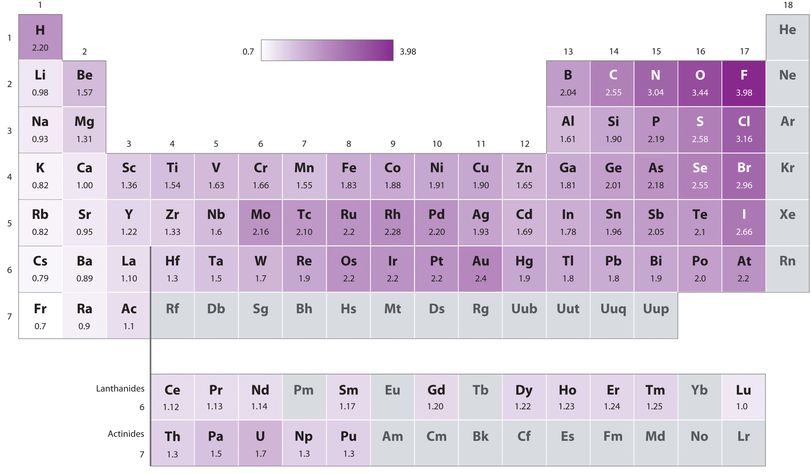
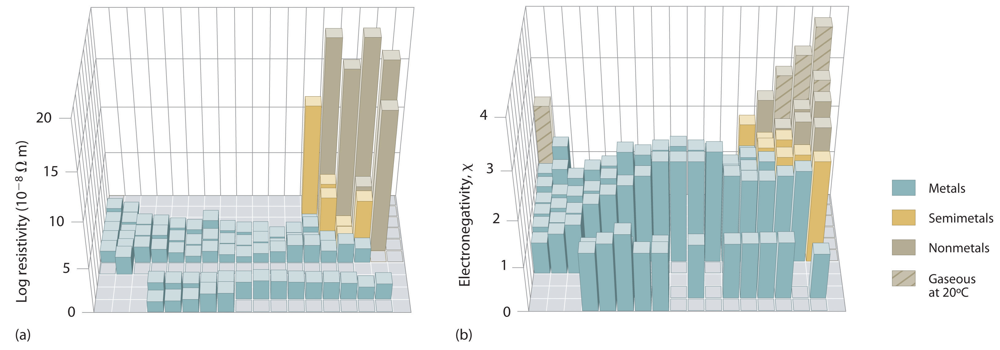
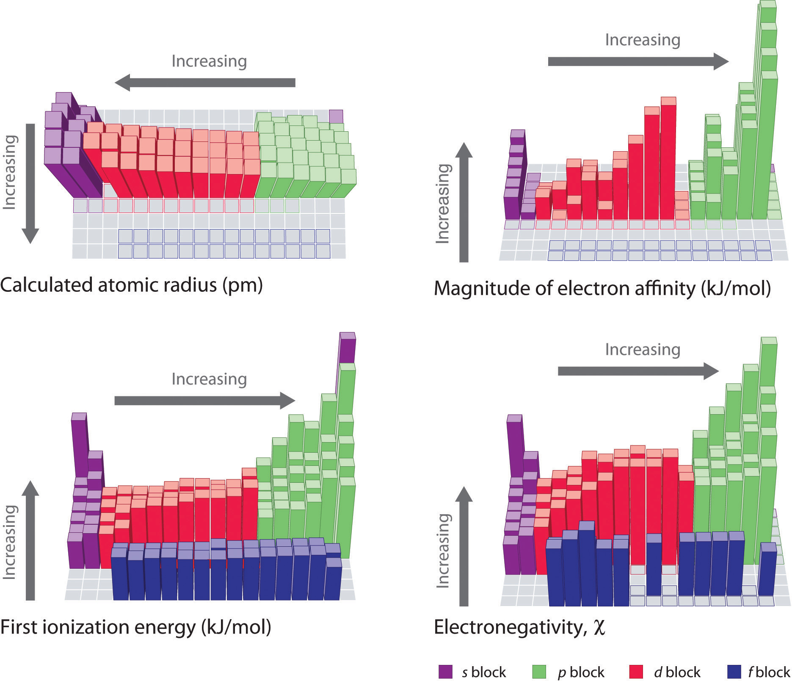

In Chapter 6 "The Structure of Atoms", we presented the contemporary quantum mechanical model of the atom. In using this model to describe the electronic structures of the elements in order of increasing atomic number, we saw that periodic similarities in electron configuration correlate with periodic similarities in properties, which is the basis for the structure of the periodic table. For example, the noble gases have what is often called filled or closed-shell valence electron configurations. These closed shells are actually filled s and p subshells with a total of eight electrons, which are called octets; helium is an exception, with a closed 1s shell that has only two electrons. Because of their filled valence shells, the noble gases are generally unreactive. In contrast, the alkali metals have a single valence electron outside a closed shell and readily lose this electron to elements that require electrons to achieve an octet, such as the halogens. Thus because of their periodic similarities in electron configuration, atoms in the same column of the periodic table tend to form compounds with the same oxidation states and stoichiometries. Chapter 6 "The Structure of Atoms" ended with the observation that, because all the elements in a column have the same valence electron configuration, the periodic table can be used to find the electron configuration of most of the elements at a glance.
Crookes’s Spiral Periodic Table, 1888. Created by Sir William Crookes (1832–1919), the spiral represents the relationships between the elements and the order of evolution of the elements from what he believed to be primal matter.
In this chapter, we explore the relationship between the electron configurations of the elements, as reflected in their arrangement in the periodic table, and their physical and chemical properties. In particular, we focus on the similarities between elements in the same column and on the trends in properties that are observed across horizontal rows or down vertical columns. By the end of this chapter, your understanding of these trends and relationships will provide you with clues as to why argon is used in incandescent light bulbs, why coal and wood burst into flames when they come in contact with pure F2, why aluminum was discovered so late despite being the third most abundant element in Earth’s crust, and why lithium is commonly used in batteries. We begin by expanding on the brief discussion of the history of the periodic table presented in Chapter 1 "Introduction to Chemistry" and describing how it was created many years before electrons had even been discovered, much less discussed in terms of shells, subshells, orbitals, and electron spin.
The modern periodic table has evolved through a long history of attempts by chemists to arrange the elements according to their properties as an aid in predicting chemical behavior. One of the first to suggest such an arrangement was the German chemist Johannes Dobereiner (1780–1849), who noticed that many of the known elements could be grouped in triadsA set of three elements that have similar properties., sets of three elements that have similar properties—for example, chlorine, bromine, and iodine; or copper, silver, and gold. Dobereiner proposed that all elements could be grouped in such triads, but subsequent attempts to expand his concept were unsuccessful. We now know that portions of the periodic table—the d block in particular—contain triads of elements with substantial similarities. The middle three members of most of the other columns, such as sulfur, selenium, and tellurium in group 16 or aluminum, gallium, and indium in group 13, also have remarkably similar chemistry.
By the mid-19th century, the atomic masses of many of the elements had been determined. The English chemist John Newlands (1838–1898), hypothesizing that the chemistry of the elements might be related to their masses, arranged the known elements in order of increasing atomic mass and discovered that every seventh element had similar properties (Figure 7.1 "The Arrangement of the Elements into Octaves as Proposed by Newlands"). (The noble gases were still unknown.) Newlands therefore suggested that the elements could be classified into octavesA group of seven elements, corresponding to the horizontal rows in the main group elements (not counting the noble gases, which were unknown at the time)., corresponding to the horizontal rows in the main group elements. Unfortunately, Newlands’s “law of octaves” did not seem to work for elements heavier than calcium, and his idea was publicly ridiculed. At one scientific meeting, Newlands was asked why he didn’t arrange the elements in alphabetical order instead of by atomic mass, since that would make just as much sense! Actually, Newlands was on the right track—with only a few exceptions, atomic mass does increase with atomic number, and similar properties occur every time a set of ns2np6 subshells is filled. Despite the fact that Newlands’s table had no logical place for the d-block elements, he was honored for his idea by the Royal Society of London in 1887.
Newlands noticed that elemental properties repeated every seventh (or multiple of seven) element, as musical notes repeat every eighth note.
Figure 7.1 The Arrangement of the Elements into Octaves as Proposed by Newlands

The table shown here accompanied a letter from a 27-year-old Newlands to the editor of the journal Chemical News in which he wrote: “If the elements are arranged in the order of their equivalents, with a few slight transpositions, as in the accompanying table, it will be observed that elements belonging to the same group usually appear on the same horizontal line. It will also be seen that the numbers of analogous elements generally differ either by 7 or by some multiple of seven; in other words, members of the same group stand to each other in the same relation as the extremities of one or more octaves in music. Thus, in the nitrogen group, between nitrogen and phosphorus there are 7 elements; between phosphorus and arsenic, 14; between arsenic and antimony, 14; and lastly, between antimony and bismuth, 14 also. This peculiar relationship I propose to provisionally term the Law of Octaves. I am, &c. John A. R. Newlands, F.C.S. Laboratory, 19, Great St. Helen’s, E.C., August 8, 1865.”
The periodic table achieved its modern form through the work of the German chemist Julius Lothar Meyer (1830–1895) and the Russian chemist Dimitri Mendeleev (1834–1907), both of whom focused on the relationships between atomic mass and various physical and chemical properties. In 1869, they independently proposed essentially identical arrangements of the elements. Meyer aligned the elements in his table according to periodic variations in simple atomic properties, such as “atomic volume” (Figure 7.2 "Variation of Atomic Volume with Atomic Number, Adapted from Meyer’s Plot of 1870"), which he obtained by dividing the atomic mass (molar mass) in grams per mole by the density of the element in grams per cubic centimeter. This property is equivalent to what is today defined as molar volumeThe molar mass of an element divided by its density. (measured in cubic centimeters per mole):
Equation 7.1
As shown in Figure 7.2 "Variation of Atomic Volume with Atomic Number, Adapted from Meyer’s Plot of 1870", the alkali metals have the highest molar volumes of the solid elements. In Meyer’s plot of atomic volume versus atomic mass, the nonmetals occur on the rising portion of the graph, and metals occur at the peaks, in the valleys, and on the downslopes.
When his family’s glass factory was destroyed by fire, Mendeleev moved to St. Petersburg, Russia, to study science. He became ill and was not expected to recover, but he finished his PhD with the help of his professors and fellow students. In addition to the periodic table, another of Mendeleev’s contributions to science was an outstanding textbook, The Principles of Chemistry, which was used for many years.
Figure 7.2 Variation of Atomic Volume with Atomic Number, Adapted from Meyer’s Plot of 1870

Note the periodic increase and decrease in atomic volume. Because the noble gases had not yet been discovered at the time this graph was formulated, the peaks correspond to the alkali metals (group 1).
Mendeleev, who first published his periodic table in 1869 (Figure 7.3 "Mendeleev’s Periodic Table, as Published in the German Journal "), is usually credited with the origin of the modern periodic table. The key difference between his arrangement of the elements and that of Meyer and others is that Mendeleev did not assume that all the elements had been discovered (actually, only about two-thirds of the naturally occurring elements were known at the time). Instead, he deliberately left blanks in his table at atomic masses 44, 68, 72, and 100, in the expectation that elements with those atomic masses would be discovered. Those blanks correspond to the elements we now know as scandium, gallium, germanium, and technetium.
Figure 7.3 Mendeleev’s Periodic Table, as Published in the German Journal Annalen der Chemie und Pharmacie in 1872

The column headings “Reihen” and “Gruppe” are German for “row” and “group.” Formulas indicate the type of compounds formed by each group, with “R” standing for “any element” and superscripts used where we now use subscripts. Atomic masses are shown after equal signs and increase across each row from left to right.
The most convincing evidence in support of Mendeleev’s arrangement of the elements was the discovery of two previously unknown elements whose properties closely corresponded with his predictions (Table 7.1 "Comparison of the Properties Predicted by Mendeleev in 1869 for "). Two of the blanks Mendeleev had left in his original table were below aluminum and silicon, awaiting the discovery of two as-yet-unknown elements, eka-aluminum and eka-silicon (from the Sanskrit eka, meaning “one,” as in “one beyond aluminum”). The observed properties of gallium and germanium matched those of eka-aluminum and eka-silicon so well that once they were discovered, Mendeleev’s periodic table rapidly gained acceptance.
Table 7.1 Comparison of the Properties Predicted by Mendeleev in 1869 for eka-Aluminum and eka-Silicon with the Properties of Gallium (Discovered in 1875) and Germanium (Discovered in 1886)
| Property | eka-Aluminum (predicted) | Gallium (observed) | eka-Silicon (predicted) | Germanium (observed) |
|---|---|---|---|---|
| atomic mass | 68 | 69.723 | 72 | 72.64 |
| element | metal | metal | dirty-gray metal | gray-white metal |
| low mp* | mp = 29.8°C | high mp | mp = 938°C | |
| d = 5.9 g/cm3 | d = 5.91 g/cm3 | d = 5.5 g/cm3 | d = 5.323 g/cm3 | |
| oxide | E2O3 | Ga2O3 | EO2 | GeO2 |
| d = 5.5 g/cm3 | d = 6.0 g/cm3 | d = 4.7 g/cm3 | d = 4.25 g/cm3 | |
| chloride | ECl3 | GaCl3 | ECl4 | GeCl4 |
| volatile |
mp = 78°C bp* = 201°C |
bp < 100°C | bp = 87°C | |
| *mp = melting point; bp = boiling point. | ||||
When the chemical properties of an element suggested that it might have been assigned the wrong place in earlier tables, Mendeleev carefully reexamined its atomic mass. He discovered, for example, that the atomic masses previously reported for beryllium, indium, and uranium were incorrect. The atomic mass of indium had originally been reported as 75.6, based on an assumed stoichiometry of InO for its oxide. If this atomic mass were correct, then indium would have to be placed in the middle of the nonmetals, between arsenic (atomic mass 75) and selenium (atomic mass 78). Because elemental indium is a silvery-white metal, however, Mendeleev postulated that the stoichiometry of its oxide was really In2O3 rather than InO. This would mean that indium’s atomic mass was actually 113, placing the element between two other metals, cadmium and tin.
One group of elements that is absent from Mendeleev’s table is the noble gases, all of which were discovered more than 20 years later, between 1894 and 1898, by Sir William Ramsay (1852–1916; Nobel Prize in Chemistry 1904). Initially, Ramsay did not know where to place these elements in the periodic table. Argon, the first to be discovered, had an atomic mass of 40. This was greater than chlorine’s and comparable to that of potassium, so Ramsay, using the same kind of reasoning as Mendeleev, decided to place the noble gases between the halogens and the alkali metals.
Despite its usefulness, Mendeleev’s periodic table was based entirely on empirical observation supported by very little understanding. It was not until 1913, when a young British physicist, H. G. J. Moseley (1887–1915), while analyzing the frequencies of x-rays emitted by the elements, discovered that the underlying foundation of the order of the elements was by the atomic number, not the atomic mass. Moseley hypothesized that the placement of each element in his series corresponded to its atomic number Z, which is the number of positive charges (protons) in its nucleus. Argon, for example, although having an atomic mass greater than that of potassium (39.9 amu versus 39.1 amu, respectively), was placed before potassium in the periodic table. While analyzing the frequencies of the emitted x-rays, Moseley noticed that the atomic number of argon is 18, whereas that of potassium is 19, which indicated that they were indeed placed correctly. Moseley also noticed three gaps in his table of x-ray frequencies, so he predicted the existence of three unknown elements: technetium (Z = 43), discovered in 1937; promethium (Z = 61), discovered in 1945; and rhenium (Z = 75), discovered in 1925.
Moseley left his research work at the University of Oxford to join the British army as a telecommunications officer during World War I. He was killed during the Battle of Gallipoli in Turkey.
Before its discovery in 1999, some theoreticians believed that an element with a Z of 114 existed in nature. Use Mendeleev’s reasoning to name element 114 as eka-______; then identify the known element whose chemistry you predict would be most similar to that of element 114.
Given: atomic number
Asked for: name using prefix eka-
Strategy:
A Using the periodic table (see Chapter 32 "Appendix H: Periodic Table of Elements"), locate the n = 7 row. Identify the location of the unknown element with Z = 114; then identify the known element that is directly above this location.
B Name the unknown element by using the prefix eka- before the name of the known element.
Solution:
A The n = 7 row can be filled in by assuming the existence of elements with atomic numbers greater than 112, which is underneath mercury (Hg). Counting three boxes to the right gives element 114, which lies directly below lead (Pb). B If Mendeleev were alive today, he would call element 114 eka-lead.
Exercise
Use Mendeleev’s reasoning to name element 112 as eka-______; then identify the known element whose chemistry you predict would be most similar to that of element 112.
Answer: eka-mercury
The periodic table arranges the elements according to their electron configurations, such that elements in the same column have the same valence electron configurations. Periodic variations in size and chemical properties are important factors in dictating the types of chemical reactions the elements undergo and the kinds of chemical compounds they form. The modern periodic table was based on empirical correlations of properties such as atomic mass; early models using limited data noted the existence of triads and octaves of elements with similar properties. The periodic table achieved its current form through the work of Dimitri Mendeleev and Julius Lothar Meyer, who both focused on the relationship between atomic mass and chemical properties. Meyer arranged the elements by their atomic volume, which today is equivalent to the molar volume, defined as molar mass divided by molar density. The correlation with the electronic structure of atoms was made when H. G. J. Moseley showed that the periodic arrangement of the elements was determined by atomic number, not atomic mass.
Johannes Dobereiner is credited with developing the concept of chemical triads. Which of the group 15 elements would you expect to compose a triad? Would you expect B, Al, and Ga to act as a triad? Justify your answers.
Despite the fact that Dobereiner, Newlands, Meyer, and Mendeleev all contributed to the development of the modern periodic table, Mendeleev is credited with its origin. Why was Mendeleev’s periodic table accepted so rapidly?
How did Moseley’s contribution to the development of the periodic table explain the location of the noble gases?
The eka- naming scheme devised by Mendeleev was used to describe undiscovered elements.
Based on the data given, complete the table.
| Species | Molar Mass (g/mol) | Density (g/cm3) | Molar Volume (cm3/mol) |
|---|---|---|---|
| A | 40.078 | 25.85 | |
| B | 39.09 | 0.856 | |
| C | 32.065 | 16.35 | |
| D | 1.823 | 16.98 | |
| E | 26.98 | 9.992 | |
| F | 22.98 | 0.968 |
Plot molar volume versus molar mass for these substances. According to Meyer, which would be considered metals and which would be considered nonmetals?
| Species | Molar Mass (g/mol) | Density (g/cm3) | Molar Volume (cm3/mol) |
|---|---|---|---|
| A | 40.078 | 1.550 | 25.85 |
| B | 39.09 | 0.856 | 45.67 |
| C | 32.065 | 1.961 | 16.35 |
| D | 30.95 | 1.823 | 16.98 |
| E | 26.98 | 2.700 | 9.992 |
| F | 22.98 | 0.968 | 23.7 |

Meyer found that the alkali metals had the highest molar volumes, and that molar volumes decreased steadily with increasing atomic mass, then leveled off, and finally rose again. The elements located on the rising portion of a plot of molar volume versus molar mass were typically nonmetals. If we look at the plot of the data in the table, we can immediately identify those elements with the largest molar volumes (A, B, F) as metals located on the left side of the periodic table. The element with the smallest molar volume (E) is aluminum. The plot shows that the subsequent elements (C, D) have molar volumes that are larger than that of E, but smaller than those of A and B. Thus, C and D are most likely to be nonmetals (which is the case: C = sulfur, D = phosphorus).
Although some people fall into the trap of visualizing atoms and ions as small, hard spheres similar to miniature table-tennis balls or marbles, the quantum mechanical model tells us that their shapes and boundaries are much less definite than those images suggest. As a result, atoms and ions cannot be said to have exact sizes. In this section, we discuss how atomic and ion “sizes” are defined and obtained.
Recall from Chapter 6 "The Structure of Atoms" that the probability of finding an electron in the various available orbitals falls off slowly as the distance from the nucleus increases. This point is illustrated in Figure 7.4 "Plots of Radial Probability as a Function of Distance from the Nucleus for He, Ne, and Ar", which shows a plot of total electron density for all occupied orbitals for three noble gases as a function of their distance from the nucleus. Electron density diminishes gradually with increasing distance, which makes it impossible to draw a sharp line marking the boundary of an atom.
Figure 7.4 Plots of Radial Probability as a Function of Distance from the Nucleus for He, Ne, and Ar

In He, the 1s electrons have a maximum radial probability at ≈30 pm from the nucleus. In Ne, the 1s electrons have a maximum at ≈8 pm, and the 2s and 2p electrons combine to form another maximum at ≈35 pm (the n = 2 shell). In Ar, the 1s electrons have a maximum at ≈2 pm, the 2s and 2p electrons combine to form a maximum at ≈18 pm, and the 3s and 3p electrons combine to form a maximum at ≈70 pm.
Figure 7.4 "Plots of Radial Probability as a Function of Distance from the Nucleus for He, Ne, and Ar" also shows that there are distinct peaks in the total electron density at particular distances and that these peaks occur at different distances from the nucleus for each element. Each peak in a given plot corresponds to the electron density in a given principal shell. Because helium has only one filled shell (n = 1), it shows only a single peak. In contrast, neon, with filled n = 1 and 2 principal shells, has two peaks. Argon, with filled n = 1, 2, and 3 principal shells, has three peaks. The peak for the filled n = 1 shell occurs at successively shorter distances for neon (Z = 10) and argon (Z = 18) because, with a greater number of protons, their nuclei are more positively charged than that of helium. Because the 1s2 shell is closest to the nucleus, its electrons are very poorly shielded by electrons in filled shells with larger values of n. Consequently, the two electrons in the n = 1 shell experience nearly the full nuclear charge, resulting in a strong electrostatic interaction between the electrons and the nucleus. The energy of the n = 1 shell also decreases tremendously (the filled 1s orbital becomes more stable) as the nuclear charge increases. For similar reasons, the filled n = 2 shell in argon is located closer to the nucleus and has a lower energy than the n = 2 shell in neon.
Figure 7.4 "Plots of Radial Probability as a Function of Distance from the Nucleus for He, Ne, and Ar" illustrates the difficulty of measuring the dimensions of an individual atom. Because distances between the nuclei in pairs of covalently bonded atoms can be measured quite precisely, however, chemists use these distances as a basis for describing the approximate sizes of atoms. For example, the internuclear distance in the diatomic Cl2 molecule is known to be 198 pm. We assign half of this distance to each chlorine atom, giving chlorine a covalent atomic radius (rcov)Half the distance between the nuclei of two like atoms joined by a covalent bond in the same molecule. of 99 pm or 0.99 Å (part (a) in Figure 7.5 "Definitions of the Atomic Radius").Atomic radii are often measured in angstroms (Å), a non-SI unit: 1 Å = 1 × 10−10 m = 100 pm.
Figure 7.5 Definitions of the Atomic Radius

(a) The covalent atomic radius, rcov, is half the distance between the nuclei of two like atoms joined by a covalent bond in the same molecule, such as Cl2. (b) The metallic atomic radius, rmet, is half the distance between the nuclei of two adjacent atoms in a pure solid metal, such as aluminum. (c) The van der Waals atomic radius, rvdW, is half the distance between the nuclei of two like atoms, such as argon, that are closely packed but not bonded. (d) This is a depiction of covalent versus van der Waals radii of chlorine.
In a similar approach, we can use the lengths of carbon–carbon single bonds in organic compounds, which are remarkably uniform at 154 pm, to assign a value of 77 pm as the covalent atomic radius for carbon. If these values do indeed reflect the actual sizes of the atoms, then we should be able to predict the lengths of covalent bonds formed between different elements by adding them. For example, we would predict a carbon–chlorine distance of 77 pm + 99 pm = 176 pm for a C–Cl bond, which is very close to the average value observed in many organochlorine compounds.A similar approach for measuring the size of ions is discussed later in this section.
Covalent atomic radii can be determined for most of the nonmetals, but how do chemists obtain atomic radii for elements that do not form covalent bonds? For these elements, a variety of other methods have been developed. With a metal, for example, the metallic atomic radius(rmet)Half the distance between the nuclei of two adjacent metal atoms. is defined as half the distance between the nuclei of two adjacent metal atoms (part (b) in Figure 7.5 "Definitions of the Atomic Radius"). For elements such as the noble gases, most of which form no stable compounds, we can use what is called the van der Waals atomic radius(rvdW)Half the internuclear distance between two nonbonded atoms in the solid., which is half the internuclear distance between two nonbonded atoms in the solid (part (c) in Figure 7.5 "Definitions of the Atomic Radius"). An atom such as chlorine has both a covalent radius (the distance between the two atoms in a Cl2 molecule) and a van der Waals radius (the distance between two Cl atoms in different molecules in, for example, Cl2(s) at low temperatures). These radii are generally not the same (part (d) in Figure 7.5 "Definitions of the Atomic Radius").
Because it is impossible to measure the sizes of both metallic and nonmetallic elements using any one method, chemists have developed a self-consistent way of calculating atomic radii using the quantum mechanical functions described in Chapter 6 "The Structure of Atoms". Although the radii values obtained by such calculations are not identical to any of the experimentally measured sets of values, they do provide a way to compare the intrinsic sizes of all the elements and clearly show that atomic size varies in a periodic fashion (Figure 7.6 "A Plot of Periodic Variation of Atomic Radius with Atomic Number for the First Six Rows of the Periodic Table"). In the periodic table, atomic radii decrease from left to right across a row and increase from top to bottom down a column. Because of these two trends, the largest atoms are found in the lower left corner of the periodic table, and the smallest are found in the upper right corner (Figure 7.7 "Calculated Atomic Radii (in Picometers) of the ").
Figure 7.6 A Plot of Periodic Variation of Atomic Radius with Atomic Number for the First Six Rows of the Periodic Table

There is a similarity to the plot of atomic volume versus atomic number (Figure 7.2 "Variation of Atomic Volume with Atomic Number, Adapted from Meyer’s Plot of 1870")—a variation of Meyer’s early plot.
Figure 7.7 Calculated Atomic Radii (in Picometers) of the s-, p-, and d-Block Elements

The sizes of the circles illustrate the relative sizes of the atoms. The calculated values are based on quantum mechanical wave functions.
Source: http://www.webelements.com.
Atomic radii decrease from left to right across a row and increase from top to bottom down a column.
Trends in atomic size result from differences in the effective nuclear charges (Zeff) experienced by electrons in the outermost orbitals of the elements. As we described in Chapter 6 "The Structure of Atoms", for all elements except H, the effective nuclear charge is always less than the actual nuclear charge because of shielding effects. The greater the effective nuclear charge, the more strongly the outermost electrons are attracted to the nucleus and the smaller the atomic radius.
The atoms in the second row of the periodic table (Li through Ne) illustrate the effect of electron shielding. (For more information on electron shielding, see Chapter 6 "The Structure of Atoms", Section 6.5 "Atomic Orbitals and Their Energies", and Figure 6.29 "Orbital Energy Level Diagram for a Typical Multielectron Atom".) All have a filled 1s2 inner shell, but as we go from left to right across the row, the nuclear charge increases from +3 to +10. Although electrons are being added to the 2s and 2p orbitals, electrons in the same principal shell are not very effective at shielding one another from the nuclear charge. Thus the single 2s electron in lithium experiences an effective nuclear charge of approximately +1 because the electrons in the filled 1s2 shell effectively neutralize two of the three positive charges in the nucleus. (More detailed calculations give a value of Zeff = +1.26 for Li.) In contrast, the two 2s electrons in beryllium do not shield each other very well, although the filled 1s2 shell effectively neutralizes two of the four positive charges in the nucleus. This means that the effective nuclear charge experienced by the 2s electrons in beryllium is between +1 and +2 (the calculated value is +1.66). Consequently, beryllium is significantly smaller than lithium. Similarly, as we proceed across the row, the increasing nuclear charge is not effectively neutralized by the electrons being added to the 2s and 2p orbitals. The result is a steady increase in the effective nuclear charge and a steady decrease in atomic size.

The increase in atomic size going down a column is also due to electron shielding, but the situation is more complex because the principal quantum number n is not constant. As we saw in Chapter 6 "The Structure of Atoms", the size of the orbitals increases as n increases, provided the nuclear charge remains the same. In group 1, for example, the size of the atoms increases substantially going down the column. It may at first seem reasonable to attribute this effect to the successive addition of electrons to ns orbitals with increasing values of n. However, it is important to remember that the radius of an orbital depends dramatically on the nuclear charge. As we go down the column of the group 1 elements, the principal quantum number n increases from 2 to 6, but the nuclear charge increases from +3 to +55! If the outermost electrons in cesium experienced the full nuclear charge of +55, a cesium atom would be very small indeed. In fact, the effective nuclear charge felt by the outermost electrons in cesium is much less than expected (6 rather than 55). This means that cesium, with a 6s1 valence electron configuration, is much larger than lithium, with a 2s1 valence electron configuration. The effective nuclear charge changes relatively little from lithium to cesium because electrons in filled inner shells are highly effective at shielding electrons in outer shells from the nuclear charge. Even though cesium has a nuclear charge of +55, it has 54 electrons in its filled 1s22s22p63s23p64s23d104p65s24d105p6 shells, abbreviated as [Xe]5s24d105p6, which effectively neutralize most of the 55 positive charges in the nucleus. The same dynamic is responsible for the steady increase in size observed as we go down the other columns of the periodic table. Irregularities can usually be explained by variations in effective nuclear charge.
Electrons in the same principal shell are not very effective at shielding one another from the nuclear charge, whereas electrons in filled inner shells are highly effective at shielding electrons in outer shells from the nuclear charge.
On the basis of their positions in the periodic table, arrange these elements in order of increasing atomic radius: aluminum, carbon, and silicon.
Given: three elements
Asked for: arrange in order of increasing atomic radius
Strategy:
A Identify the location of the elements in the periodic table. Determine the relative sizes of elements located in the same column from their principal quantum number n. Then determine the order of elements in the same row from their effective nuclear charges. If the elements are not in the same column or row, use pairwise comparisons.
B List the elements in order of increasing atomic radius.
Solution:
A These elements are not all in the same column or row, so we must use pairwise comparisons. Carbon and silicon are both in group 14 with carbon lying above, so carbon is smaller than silicon (C < Si). Aluminum and silicon are both in the third row with aluminum lying to the left, so silicon is smaller than aluminum (Si < Al) because its effective nuclear charge is greater. B Combining the two inequalities gives the overall order: C < Si < Al.
Exercise
On the basis of their positions in the periodic table, arrange these elements in order of increasing size: oxygen, phosphorus, potassium, and sulfur.
Answer: O < S < P < K
As you learned in Chapter 2 "Molecules, Ions, and Chemical Formulas", ionic compounds consist of regular repeating arrays of alternating cations and anions. Although it is not possible to measure an ionic radius directly for the same reason it is not possible to directly measure an atom’s radius, it is possible to measure the distance between the nuclei of a cation and an adjacent anion in an ionic compound to determine the ionic radiusThe radius of a cation or anion. of one or both. As illustrated in Figure 7.8 "Definition of Ionic Radius", the internuclear distance corresponds to the sum of the radii of the cation and anion. A variety of methods have been developed to divide the experimentally measured distance proportionally between the smaller cation and larger anion. These methods produce sets of ionic radii that are internally consistent from one ionic compound to another, although each method gives slightly different values. For example, the radius of the Na+ ion is essentially the same in NaCl and Na2S, as long as the same method is used to measure it. Thus despite minor differences due to methodology, certain trends can be observed.
Figure 7.8 Definition of Ionic Radius

(a) The internuclear distance is apportioned between adjacent cations and anions in the ionic structure, as shown here for Na+ and Cl− in sodium chloride. (b) This depiction of electron density contours for a single plane of atoms in the NaCl structure shows how the lines connect points of equal electron density. Note the relative sizes of the electron density contour lines around Cl− and Na+.
A comparison of ionic radii with atomic radii (Figure 7.9 "Ionic Radii (in Picometers) of the Most Common Oxidation States of the ") shows that a cation is always smaller than its parent neutral atom, and an anion is always larger than the parent neutral atom. When one or more electrons is removed from a neutral atom, two things happen: (1) repulsions between electrons in the same principal shell decrease because fewer electrons are present, and (2) the effective nuclear charge felt by the remaining electrons increases because there are fewer electrons to shield one another from the nucleus. Consequently, the size of the region of space occupied by electrons decreases (compare Li at 167 pm with Li+ at 76 pm). If different numbers of electrons can be removed to produce ions with different charges, the ion with the greatest positive charge is the smallest (compare Fe2+ at 78 pm with Fe3+ at 64.5 pm). Conversely, adding one or more electrons to a neutral atom causes electron–electron repulsions to increase and the effective nuclear charge to decrease, so the size of the probability region increases (compare F at 42 pm with F− at 133 pm).
Figure 7.9 Ionic Radii (in Picometers) of the Most Common Oxidation States of the s-, p-, and d-Block Elements

Gray circles indicate the sizes of the ions shown; colored circles indicate the sizes of the neutral atoms, previously shown in Figure 7.7 "Calculated Atomic Radii (in Picometers) of the ".
Source: Ionic radius data from R. D. Shannon, “Revised effective ionic radii and systematic studies of interatomic distances in halides and chalcogenides,” Acta Crystallographica 32, no. 5 (1976): 751–767.
Cations are always smaller than the neutral atom, and anions are always larger.
Because most elements form either a cation or an anion but not both, there are few opportunities to compare the sizes of a cation and an anion derived from the same neutral atom. A few compounds of sodium, however, contain the Na− ion, allowing comparison of its size with that of the far more familiar Na+ ion, which is found in many compounds. The radius of sodium in each of its three known oxidation states is given in Table 7.2 "Experimentally Measured Values for the Radius of Sodium in Its Three Known Oxidation States". All three species have a nuclear charge of +11, but they contain 10 (Na+), 11 (Na0), and 12 (Na−) electrons. The Na+ ion is significantly smaller than the neutral Na atom because the 3s1 electron has been removed to give a closed shell with n = 2. The Na− ion is larger than the parent Na atom because the additional electron produces a 3s2 valence electron configuration, while the nuclear charge remains the same.
Table 7.2 Experimentally Measured Values for the Radius of Sodium in Its Three Known Oxidation States
| Na+ | Na0 | Na− | |
|---|---|---|---|
| Electron Configuration | 1s22s22p6 | 1s22s22p63s1 | 1s22s22p63s2 |
| Radius (pm) | 102 | 154* | 202† |
| *The metallic radius measured for Na(s). | |||
| †Source: M. J. Wagner and J. L. Dye, “Alkalides, Electrides, and Expanded Metals,” Annual Review of Materials Science 23 (1993): 225–253. | |||
Ionic radii follow the same vertical trend as atomic radii; that is, for ions with the same charge, the ionic radius increases going down a column. The reason is the same as for atomic radii: shielding by filled inner shells produces little change in the effective nuclear charge felt by the outermost electrons. Again, principal shells with larger values of n lie at successively greater distances from the nucleus.
Because elements in different columns tend to form ions with different charges, it is not possible to compare ions of the same charge across a row of the periodic table. Instead, elements that are next to each other tend to form ions with the same number of electrons but with different overall charges because of their different atomic numbers. Such a set of species is known as an isoelectronic seriesA group of ions or atoms and ions that have the same number of electrons and thus the same ground-state electron configuration.. For example, the isoelectronic series of species with the neon closed-shell configuration (1s22s22p6) is shown in Table 7.3 "Radius of Ions with the Neon Closed-Shell Electron Configuration". The sizes of the ions in this series decrease smoothly from N3− to Al3+. All six of the ions contain 10 electrons in the 1s, 2s, and 2p orbitals, but the nuclear charge varies from +7 (N) to +13 (Al). As the positive charge of the nucleus increases while the number of electrons remains the same, there is a greater electrostatic attraction between the electrons and the nucleus, which causes a decrease in radius. Consequently, the ion with the greatest nuclear charge (Al3+) is the smallest, and the ion with the smallest nuclear charge (N3−) is the largest. One member of this isoelectronic series is not listed in Table 7.3 "Radius of Ions with the Neon Closed-Shell Electron Configuration": the neon atom. Because neon forms no covalent or ionic compounds, its radius is difficult to measure.
Table 7.3 Radius of Ions with the Neon Closed-Shell Electron Configuration
| Ion | Radius (pm) | Atomic Number |
|---|---|---|
| N3− | 146 | 7 |
| O2− | 140 | 8 |
| F− | 133 | 9 |
| Na+ | 102 | 11 |
| Mg2+ | 72 | 12 |
| Al3+ | 53.5 | 13 |
Source: R. D. Shannon, “Revised effective ionic radii and systematic studies of interatomic distances in halides and chalcogenides,” Acta Crystallographica 32, no. 5 (1976): 751–767.
Based on their positions in the periodic table, arrange these ions in order of increasing radius: Cl−, K+, S2−, and Se2−.
Given: four ions
Asked for: order by increasing radius
Strategy:
A Determine which ions form an isoelectronic series. Of those ions, predict their relative sizes based on their nuclear charges. For ions that do not form an isoelectronic series, locate their positions in the periodic table.
B Determine the relative sizes of the ions based on their principal quantum numbers n and their locations within a row.
Solution:
A We see that S and Cl are at the right of the third row, while K and Se are at the far left and right ends of the fourth row, respectively. K+, Cl−, and S2− form an isoelectronic series with the [Ar] closed-shell electron configuration; that is, all three ions contain 18 electrons but have different nuclear charges. Because K+ has the greatest nuclear charge (Z = 19), its radius is smallest, and S2− with Z = 16 has the largest radius. Because selenium is directly below sulfur, we expect the Se2− ion to be even larger than S2−. B The order must therefore be K+ < Cl− < S2− < Se2−.
Exercise
Based on their positions in the periodic table, arrange these ions in order of increasing size: Br−, Ca2+, Rb+, and Sr2+.
Answer: Ca2+ < Sr2+ < Rb+ < Br−
A variety of methods have been established to measure the size of a single atom or ion. The covalent atomic radius (rcov) is half the internuclear distance in a molecule with two identical atoms bonded to each other, whereas the metallic atomic radius (rmet) is defined as half the distance between the nuclei of two adjacent atoms in a metallic element. The van der Waals radius (rvdW) of an element is half the internuclear distance between two nonbonded atoms in a solid. Atomic radii decrease from left to right across a row because of the increase in effective nuclear charge due to poor electron screening by other electrons in the same principal shell. Moreover, atomic radii increase from top to bottom down a column because the effective nuclear charge remains relatively constant as the principal quantum number increases. The ionic radii of cations and anions are always smaller or larger, respectively, than the parent atom due to changes in electron–electron repulsions, and the trends in ionic radius parallel those in atomic size. A comparison of the dimensions of atoms or ions that have the same number of electrons but different nuclear charges, called an isoelectronic series, shows a clear correlation between increasing nuclear charge and decreasing size.
The electrons of the 1s shell have a stronger electrostatic attraction to the nucleus than electrons in the 2s shell. Give two reasons for this.
Predict whether Na or Cl has the more stable 1s2 shell and explain your rationale.
Arrange K, F, Ba, Pb, B, and I in order of decreasing atomic radius.
Arrange Ag, Pt, Mg, C, Cu, and Si in order of increasing atomic radius.
Using the periodic table, arrange Li, Ga, Ba, Cl, and Ni in order of increasing atomic radius.
Element M is a metal that forms compounds of the type MX2, MX3, and MX4, where X is a halogen. What is the expected trend in the ionic radius of M in these compounds? Arrange these compounds in order of decreasing ionic radius of M.
The atomic radii of Na and Cl are 190 and 79 pm, respectively, but the distance between sodium and chlorine in NaCl is 282 pm. Explain this discrepancy.
Are shielding effects on the atomic radius more pronounced across a row or down a group? Why?
What two factors influence the size of an ion relative to the size of its parent atom? Would you expect the ionic radius of S2− to be the same in both MgS and Na2S? Why or why not?
Arrange Br−, Al3+, Sr2+, F−, O2−, and I− in order of increasing ionic radius.
Arrange P3−, N3−, Cl−, In3+, and S2− in order of decreasing ionic radius.
How is an isoelectronic series different from a series of ions with the same charge? Do the cations in magnesium, strontium, and potassium sulfate form an isoelectronic series? Why or why not?
What isoelectronic series arises from fluorine, nitrogen, magnesium, and carbon? Arrange the ions in this series by
What would be the charge and electron configuration of an ion formed from calcium that is isoelectronic with
The 1s shell is closer to the nucleus and therefore experiences a greater electrostatic attraction. In addition, the electrons in the 2s subshell are shielded by the filled 1s2 shell, which further decreases the electrostatic attraction to the nucleus.
Ba > K > Pb > I > B > F
The sum of the calculated atomic radii of sodium and chlorine atoms is 253 pm. The sodium cation is significantly smaller than a neutral sodium atom (102 versus 154 pm), due to the loss of the single electron in the 3s orbital. Conversely, the chloride ion is much larger than a neutral chlorine atom (181 versus 99 pm), because the added electron results in greatly increased electron–electron repulsions within the filled n = 3 principal shell. Thus, transferring an electron from sodium to chlorine decreases the radius of sodium by about 50%, but causes the radius of chlorine to almost double. The net effect is that the distance between a sodium ion and a chloride ion in NaCl is greater than the sum of the atomic radii of the neutral atoms.
Plot the ionic charge versus ionic radius using the following data for Mo: Mo3+, 69 pm; Mo4+, 65 pm; and Mo5+, 61 pm. Then use this plot to predict the ionic radius of Mo6+. Is the observed trend consistent with the general trends discussed in the chapter? Why or why not?
Internuclear distances for selected ionic compounds are given in the following table.
If the ionic radius of Li+ is 76 pm, what is the ionic radius of each of the anions?
| LiF | LiCl | LiBr | LiI | |
|---|---|---|---|---|
| Distance (pm) | 209 | 257 | 272 | 296 |
What is the ionic radius of Na+?
| NaF | NaCl | NaBr | NaI | |
|---|---|---|---|---|
| Distance (pm) | 235 | 282 | 298 | 322 |
Arrange the gaseous species Mg2+, P3−, Br−, S2−, F−, and N3− in order of increasing radius and justify your decisions.
We have seen that when elements react, they often gain or lose enough electrons to achieve the valence electron configuration of the nearest noble gas. In this section, we develop a more quantitative approach to predicting such reactions by examining periodic trends in the energy changes that accompany ion formation.
Because atoms do not spontaneously lose electrons, energy is required to remove an electron from an atom to form a cation. Chemists define the ionization energy(I)The minimum amount of energy needed to remove an electron from the gaseous atom in its ground state: of an element as the amount of energy needed to remove an electron from the gaseous atom E in its ground state. I is therefore the energy required for the reaction
Equation 7.2
Because an input of energy is required, the ionization energy is always positive (I > 0) for the reaction as written in Equation 7.2. Larger values of I mean that the electron is more tightly bound to the atom and harder to remove. Typical units for ionization energies are kilojoules/mole (kJ/mol) or electron volts (eV):
1 eV/atom = 96.49 kJ/molIf an atom possesses more than one electron, the amount of energy needed to remove successive electrons increases steadily. We can define a first ionization energy (I1), a second ionization energy (I2), and in general an nth ionization energy (In) according to the following reactions:
Equation 7.3
Equation 7.4
Equation 7.5
Values for the ionization energies of Li and Be listed in Table 7.4 "Ionization Energies (in kJ/mol) for Removing Successive Electrons from Li and Be" show that successive ionization energies for an element increase steadily; that is, it takes more energy to remove the second electron from an atom than the first, and so forth. There are two reasons for this trend. First, the second electron is being removed from a positively charged species rather than a neutral one, so in accordance with Coulomb’s law, more energy is required. Second, removing the first electron reduces the repulsive forces among the remaining electrons, so the attraction of the remaining electrons to the nucleus is stronger.
Successive ionization energies for an element increase steadily.
Table 7.4 Ionization Energies (in kJ/mol) for Removing Successive Electrons from Li and Be
| Reaction | I | Reaction | I |
|---|---|---|---|
| I1 = 520.2 | I1 = 899.5 | ||
| I2 = 7298.2 | I2 = 1757.1 | ||
| I3 = 11,815.0 | I3 = 14,848.8 | ||
| I4 = 21,006.6 |
Source: Data from CRC Handbook of Chemistry and Physics (2004).
The most important consequence of the values listed in Table 7.4 "Ionization Energies (in kJ/mol) for Removing Successive Electrons from Li and Be" is that the chemistry of Li is dominated by the Li+ ion, while the chemistry of Be is dominated by the +2 oxidation state. The energy required to remove the second electron from Li
Li+(g) → Li2+(g) + e−is more than 10 times greater than the energy needed to remove the first electron. Similarly, the energy required to remove the third electron from Be
Be2+(g) → Be3+(g) + e−is about 15 times greater than the energy needed to remove the first electron and around 8 times greater than the energy required to remove the second electron. Both Li+ and Be2+ have 1s2 closed-shell configurations, and much more energy is required to remove an electron from the 1s2 core than from the 2s valence orbital of the same element. The chemical consequences are enormous: lithium (and all the alkali metals) forms compounds with the 1+ ion but not the 2+ or 3+ ions. Similarly, beryllium (and all the alkaline earth metals) forms compounds with the 2+ ion but not the 3+ or 4+ ions. The energy required to remove electrons from a filled core is prohibitively large and simply cannot be achieved in normal chemical reactions.
The energy required to remove electrons from a filled core is prohibitively large under normal reaction conditions.
Ionization energies of the elements in the third row of the periodic table exhibit the same pattern as those of Li and Be (Table 7.5 "Successive Ionization Energies (in kJ/mol) for the Elements in the Third Row of the Periodic Table"): successive ionization energies increase steadily as electrons are removed from the valence orbitals (3s or 3p, in this case), followed by an especially large increase in ionization energy when electrons are removed from filled core levels as indicated by the bold diagonal line in Table 7.5 "Successive Ionization Energies (in kJ/mol) for the Elements in the Third Row of the Periodic Table". Thus in the third row of the periodic table, the largest increase in ionization energy corresponds to removing the fourth electron from Al, the fifth electron from Si, and so forth—that is, removing an electron from an ion that has the valence electron configuration of the preceding noble gas. This pattern explains why the chemistry of the elements normally involves only valence electrons. Too much energy is required to either remove or share the inner electrons.
Table 7.5 Successive Ionization Energies (in kJ/mol) for the Elements in the Third Row of the Periodic Table
| Element | I 1 | I 2 | I 3 | I 4 | I 5 | I 6 | I 7 |
|---|---|---|---|---|---|---|---|
| Na | 495.8 | 4562.4* | — | — | — | — | — |
| Mg | 737.7 | 1450.7 | 7732.7 | — | — | — | — |
| Al | 577.5 | 1816.7 | 2744.8 | 11,577.5 | — | — | — |
| Si | 786.5 | 1577.1 | 3231.6 | 4355.5 | 16,090.6 | — | — |
| P | 1011.8 | 1907.5 | 2914.1 | 4963.6 | 6274.0 | 21,267.4 | — |
| S | 999.6 | 2251.8 | 3357 | 4556.2 | 7004.3 | 8495.8 | 27,107.4 |
| Cl | 1251.2 | 2297.7 | 3822 | 5158.6 | 6540 | 9362 | 11,018.2 |
| Ar | 1520.6 | 2665.9 | 3931 | 5771 | 7238 | 8781.0 | 11,995.3 |
| *Inner-shell electron | |||||||
Source: Data from CRC Handbook of Chemistry and Physics (2004).
From their locations in the periodic table, predict which of these elements has the highest fourth ionization energy: B, C, or N.
Given: three elements
Asked for: element with highest fourth ionization energy
Strategy:
A List the electron configuration of each element.
B Determine whether electrons are being removed from a filled or partially filled valence shell. Predict which element has the highest fourth ionization energy, recognizing that the highest energy corresponds to the removal of electrons from a filled electron core.
Solution:
A These elements all lie in the second row of the periodic table and have the following electron configurations:
B: [He]2s22p1 C: [He]2s22p2 N: [He]2s22p3B The fourth ionization energy of an element (I4) is defined as the energy required to remove the fourth electron:
E3+(g) → E4+(g) + e−Because carbon and nitrogen have four and five valence electrons, respectively, their fourth ionization energies correspond to removing an electron from a partially filled valence shell. The fourth ionization energy for boron, however, corresponds to removing an electron from the filled 1s2 subshell. This should require much more energy. The actual values are as follows: B, 25,026 kJ/mol; C, 6223 kJ/mol; and N, 7475 kJ/mol.
Exercise
From their locations in the periodic table, predict which of these elements has the lowest second ionization energy: Sr, Rb, or Ar.
Answer: Sr
The first column of data in Table 7.5 "Successive Ionization Energies (in kJ/mol) for the Elements in the Third Row of the Periodic Table" shows that first ionization energies tend to increase across the third row of the periodic table. This is because the valence electrons do not screen each other very well, allowing the effective nuclear charge to increase steadily across the row. The valence electrons are therefore attracted more strongly to the nucleus, so atomic sizes decrease and ionization energies increase. These effects represent two sides of the same coin: stronger electrostatic interactions between the electrons and the nucleus further increase the energy required to remove the electrons.
However, the first ionization energy decreases at Al ([Ne]3s23p1) and at S ([Ne]3s23p4). The electrons in aluminum’s filled 3s2 subshell are better at screening the 3p1 electron than they are at screening each other from the nuclear charge, so the s electrons penetrate closer to the nucleus than the p electron does. The decrease at S occurs because the two electrons in the same p orbital repel each other. This makes the S atom slightly less stable than would otherwise be expected, as is true of all the group 16 elements.
The first ionization energies of the elements in the first six rows of the periodic table are plotted in Figure 7.10 "A Plot of Periodic Variation of First Ionization Energy with Atomic Number for the First Six Rows of the Periodic Table". They are presented numerically and graphically in Figure 7.11 "First Ionization Energies of the ". These figures illustrate three important trends:
Generally, I1 increases diagonally from the lower left of the periodic table to the upper right.
Figure 7.10 A Plot of Periodic Variation of First Ionization Energy with Atomic Number for the First Six Rows of the Periodic Table
There is a decrease in ionization energy within a group (most easily seen here for groups 1 and 18).
Figure 7.11 First Ionization Energies of the s-, p-, d-, and f-Block Elements

The darkness of the shading inside the cells of the table indicates the relative magnitudes of the ionization energies. Elements in gray have undetermined first ionization energies.
Source: Data from CRC Handbook of Chemistry and Physics (2004).
Gallium (Ga), which is the first element following the first row of transition metals, has the following electron configuration: [Ar]4s23d104p1. Its first ionization energy is significantly lower than that of the immediately preceding element, zinc, because the filled 3d10 subshell of gallium lies inside the 4p subshell, screening the single 4p electron from the nucleus. Experiments have revealed something of even greater interest: the second and third electrons that are removed when gallium is ionized come from the 4s2 orbital, not the 3d10 subshell. The chemistry of gallium is dominated by the resulting Ga3+ ion, with its [Ar]3d10 electron configuration. This and similar electron configurations are particularly stable and are often encountered in the heavier p-block elements. They are sometimes referred to as pseudo noble gas configurationsThe and similar electron configurations that are particularly stable and are often encountered in the heavier -block elements.. In fact, for elements that exhibit these configurations, no chemical compounds are known in which electrons are removed from the (n − 1)d10 filled subshell.
As we noted, the first ionization energies of the transition metals and the lanthanides change very little across each row. Differences in their second and third ionization energies are also rather small, in sharp contrast to the pattern seen with the s- and p-block elements. The reason for these similarities is that the transition metals and the lanthanides form cations by losing the ns electrons before the (n − 1)d or (n − 2)f electrons, respectively. This means that transition metal cations have (n − 1)dn valence electron configurations, and lanthanide cations have (n − 2)fn valence electron configurations. Because the (n − 1)d and (n − 2)f shells are closer to the nucleus than the ns shell, the (n − 1)d and (n − 2)f electrons screen the ns electrons quite effectively, reducing the effective nuclear charge felt by the ns electrons. As Z increases, the increasing positive charge is largely canceled by the electrons added to the (n − 1)d or (n − 2)f orbitals.
That the ns electrons are removed before the (n − 1)d or (n − 2)f electrons may surprise you because the orbitals were filled in the reverse order. (For more information on shell filling order, see Chapter 6 "The Structure of Atoms", Section 6.6 "Building Up the Periodic Table".) In fact, the ns, the (n − 1)d, and the (n − 2)f orbitals are so close to one another in energy, and interpenetrate one another so extensively, that very small changes in the effective nuclear charge can change the order of their energy levels. As the d orbitals are filled, the effective nuclear charge causes the 3d orbitals to be slightly lower in energy than the 4s orbitals. The [Ar]3d2 electron configuration of Ti2+ tells us that the 4s electrons of titanium are lost before the 3d electrons; this is confirmed by experiment. A similar pattern is seen with the lanthanides, producing cations with an (n − 2)fn valence electron configuration.
Because their first, second, and third ionization energies change so little across a row, these elements have important horizontal similarities in chemical properties in addition to the expected vertical similarities. For example, all the first-row transition metals except scandium form stable compounds as M2+ ions, whereas the lanthanides primarily form compounds in which they exist as M3+ ions.
Use their locations in the periodic table to predict which element has the lowest first ionization energy: Ca, K, Mg, Na, Rb, or Sr.
Given: six elements
Asked for: element with lowest first ionization energy
Strategy:
Locate the elements in the periodic table. Based on trends in ionization energies across a row and down a column, identify the element with the lowest first ionization energy.
Solution:
These six elements form a rectangle in the two far-left columns of the periodic table. Because we know that ionization energies increase from left to right in a row and from bottom to top of a column, we can predict that the element at the bottom left of the rectangle will have the lowest first ionization energy: Rb.
Exercise
Use their locations in the periodic table to predict which element has the highest first ionization energy: As, Bi, Ge, Pb, Sb, or Sn.
Answer: As
The electron affinity(EA)The energy change that occurs when an electron is added to a gaseous atom: of an element E is defined as the energy change that occurs when an electron is added to a gaseous atom:
Equation 7.6
Unlike ionization energies, which are always positive for a neutral atom because energy is required to remove an electron, electron affinities can be negative (energy is released when an electron is added), positive (energy must be added to the system to produce an anion), or zero (the process is energetically neutral). This sign convention is consistent with our discussion of energy changes in Chapter 5 "Energy Changes in Chemical Reactions", where a negative value corresponded to the energy change for an exothermic process, which is one in which heat is released.
Chlorine has the most negative electron affinity of any element, which means that more energy is released when an electron is added to a gaseous chlorine atom than to an atom of any other element:
Equation 7.7
In contrast, beryllium does not form a stable anion, so its effective electron affinity is
Equation 7.8
Nitrogen is unique in that it has an electron affinity of approximately zero. Adding an electron neither releases nor requires a significant amount of energy:
Equation 7.9
Electron affinities for the first six rows of the periodic table are plotted in Figure 7.12 "A Plot of Periodic Variation of Electron Affinity with Atomic Number for the First Six Rows of the Periodic Table" and presented numerically and graphically in Figure 7.13 "Electron Affinities (in kJ/mol) of the ". Both figures show that the halogens, with their ns2np5 valence electron configuration, have the most negative electron affinities. In general, electron affinities become more negative as we go across a row of the periodic table. This pattern corresponds to the increased effective nuclear charge felt by the valence electrons across a row, which leads to increased electrostatic attraction between the added electron and the nucleus (a more negative electron affinity). The trend, however, is not as uniform as the one observed for ionization energies. Some of the alkaline earths (group 2), the elements of group 12, and all the noble gases (group 18) have effective electron affinities that are greater than or equal to zero, while the electron affinities for the elements of group 15 are usually less negative than those for the group 14 elements. These exceptions can be explained by the groups’ electron configurations. Both the alkaline earth metals and the noble gases have valence electron shells with filled subshells (ns2 and ns2np6, respectively). In each case, the added electron must enter a higher-energy orbital, requiring an input of energy. All the group 15 elements have an ns2np3 valence electron configuration, in which each of the three p orbitals has a single electron, in accordance with Hund’s rule; hence the added electron must enter an already occupied p orbital. The resulting electron–electron repulsions destabilize the anion, causing the electron affinities of these elements to be less negative than we would otherwise expect. In the case of nitrogen, the 2p orbital is quite small, and the electron–electron repulsions are so strong that nitrogen has approximately zero affinity for an extra electron. In the heavier elements, however, the effect is relatively small because they have larger valence p orbitals.
Generally, electron affinities become more negative across a row of the periodic table.
Figure 7.12 A Plot of Periodic Variation of Electron Affinity with Atomic Number for the First Six Rows of the Periodic Table
Figure 7.13 Electron Affinities (in kJ/mol) of the s-, p-, and d-Block Elements
There are many more exceptions to the trends across rows and down columns than with first ionization energies. Elements that do not form stable ions, such as the noble gases, are assigned an effective electron affinity that is greater than or equal to zero. Elements for which no data are available are shown in gray.
Source: Data from Journal of Physical and Chemical Reference Data 28, no. 6 (1999).
In general, electron affinities of the main-group elements become less negative as we proceed down a column. This is because as n increases, the extra electrons enter orbitals that are increasingly far from the nucleus. Atoms with the largest radii, which have the lowest ionization energies (affinity for their own valence electrons), also have the lowest affinity for an added electron. There are, however, two major exceptions to this trend:
In general, electron affinities become more negative across a row and less negative down a column.
The equations for second and higher electron affinities are analogous to those for second and higher ionization energies:
Equation 7.10
Equation 7.11
As we have seen, the first electron affinity can be greater than or equal to zero or negative, depending on the electron configuration of the atom. In contrast, the second electron affinity is always positive because the increased electron–electron repulsions in a dianion are far greater than the attraction of the nucleus for the extra electrons. For example, the first electron affinity of oxygen is −141 kJ/mol, but the second electron affinity is +744 kJ/mol:
Equation 7.12
Equation 7.13
Thus the formation of a gaseous oxide (O2−) ion is energetically quite unfavorable:
Equation 7.14
Similarly, the formation of all common dianions (such as S2−) or trianions (such as P3−) is energetically unfavorable in the gas phase.
While first electron affinities can be negative, positive, or zero, second electron affinities are always positive.
If energy is required to form both positively charged ions and monatomic polyanions, why do ionic compounds such as MgO, Na2S, and Na3P form at all? The key factor in the formation of stable ionic compounds is the favorable electrostatic interactions between the cations and the anions in the crystalline salt. We will describe the energetics of ionic compounds in more detail in Chapter 8 "Ionic versus Covalent Bonding".
Based on their positions in the periodic table, which of Sb, Se, or Te would you predict to have the most negative electron affinity?
Given: three elements
Asked for: element with most negative electron affinity
Strategy:
A Locate the elements in the periodic table. Use the trends in electron affinities going down a column for elements in the same group. Similarly, use the trends in electron affinities from left to right for elements in the same row.
B Place the elements in order, listing the element with the most negative electron affinity first.
Solution:
A We know that electron affinities become less negative going down a column (except for the anomalously low electron affinities of the elements of the second row), so we can predict that the electron affinity of Se is more negative than that of Te. We also know that electron affinities become more negative from left to right across a row, and that the group 15 elements tend to have values that are less negative than expected. Because Sb is located to the left of Te and belongs to group 15, we predict that the electron affinity of Te is more negative than that of Sb. The overall order is Se < Te < Sb, so Se has the most negative electron affinity among the three elements.
Exercise
Based on their positions in the periodic table, which of Rb, Sr, or Xe would you predict to most likely form a gaseous anion?
Answer: Rb
The elements with the highest ionization energies are generally those with the most negative electron affinities, which are located toward the upper right corner of the periodic table (compare Figure 7.11 "First Ionization Energies of the " and Figure 7.13 "Electron Affinities (in kJ/mol) of the "). Conversely, the elements with the lowest ionization energies are generally those with the least negative electron affinities and are located in the lower left corner of the periodic table.
Because the tendency of an element to gain or lose electrons is so important in determining its chemistry, various methods have been developed to quantitatively describe this tendency. The most important method uses a measurement called electronegativityThe relative ability of an atom to attract electrons to itself in a chemical compound. (represented by the Greek letter chi, χ, pronounced “ky” as in “sky”), defined as the relative ability of an atom to attract electrons to itself in a chemical compound. Elements with high electronegativities tend to acquire electrons in chemical reactions and are found in the upper right corner of the periodic table. Elements with low electronegativities tend to lose electrons in chemical reactions and are found in the lower left corner of the periodic table.
Unlike ionization energy or electron affinity, the electronegativity of an atom is not a simple, fixed property that can be directly measured in a single experiment. In fact, an atom’s electronegativity should depend to some extent on its chemical environment because the properties of an atom are influenced by its neighbors in a chemical compound. Nevertheless, when different methods for measuring the electronegativity of an atom are compared, they all tend to assign similar relative values to a given element. For example, all scales predict that fluorine has the highest electronegativity and cesium the lowest of the stable elements, which suggests that all the methods are measuring the same fundamental property.
The original electronegativity scale, developed in the 1930s by Linus Pauling (1901– 1994) was based on measurements of the strengths of covalent bonds between different elements. Pauling arbitrarily set the electronegativity of fluorine at 4.0 (although today it has been refined to 3.98), thereby creating a scale in which all elements have values between 0 and 4.0.
Periodic variations in Pauling’s electronegativity values are illustrated in Figure 7.14 "A Plot of Periodic Variation of Electronegativity with Atomic Number for the First Six Rows of the Periodic Table" and Figure 7.15 "Pauling Electronegativity Values of the ". If we ignore the inert gases and elements for which no stable isotopes are known, we see that fluorine (χ = 3.98) is the most electronegative element and cesium is the least electronegative nonradioactive element (χ = 0.79). Because electronegativities generally increase diagonally from the lower left to the upper right of the periodic table, elements lying on diagonal lines running from upper left to lower right tend to have comparable values (e.g., O and Cl and N, S, and Br).
Figure 7.14 A Plot of Periodic Variation of Electronegativity with Atomic Number for the First Six Rows of the Periodic Table
Pauling won two Nobel Prizes, one for chemistry in 1954 and one for peace in 1962. When he was nine, Pauling’s father died, and his mother tried to convince him to quit school to support the family. He did not quit school but was denied a high school degree because of his refusal to take a civics class.
Figure 7.15 Pauling Electronegativity Values of the s-, p-, d-, and f-Block Elements
Values for most of the actinides are approximate. Elements for which no data are available are shown in gray.
Source: Data from L. Pauling, The Nature of the Chemical Bond, 3rd ed. (1960).
Pauling’s method is limited by the fact that many elements do not form stable covalent compounds with other elements; hence their electronegativities cannot be measured by his method. Other definitions have since been developed that address this problem.
An alternative method for measuring electronegativity was developed by Robert Mulliken (1896–1986; Nobel Prize in Chemistry 1966). Mulliken noticed that elements with large first ionization energies tend to have very negative electron affinities and gain electrons in chemical reactions. Conversely, elements with small first ionization energies tend to have slightly negative (or even positive) electron affinities and lose electrons in chemical reactions. Mulliken recognized that an atom’s tendency to gain or lose electrons could therefore be described quantitatively by the average of the values of its first ionization energy and the absolute value of its electron affinity. Using our definition of electron affinity, we can write Mulliken’s original expression for electronegativity as follows:Mulliken’s definition used the magnitude of the ionization energy and the electron affinity. By definition, the magnitude of a quantity is a positive number. Our definition of electron affinity produces negative values for the electron affinity for most elements, so vertical lines indicating absolute value are needed in Equation 7.15 to make sure that we are adding two positive numbers in the numerator.
Equation 7.15
Elements with a large first ionization energy and a very negative electron affinity have a large positive value in the numerator of Equation 7.15, so their electronegativity is high. Elements with a small first ionization energy and a small electron affinity have a small positive value for the numerator in Equation 7.15, so they have a low electronegativity.Inserting the appropriate data from Figure 7.11 "First Ionization Energies of the " and Figure 7.13 "Electron Affinities (in kJ/mol) of the " into Equation 7.15 gives a Mulliken electronegativity value for fluorine of 1004.6 kJ/mol. To compare Mulliken’s electronegativity values with those obtained by Pauling, Mulliken’s values are divided by 252.4 kJ/mol, which gives Pauling’s value (3.98).
As noted previously, all electronegativity scales give essentially the same results for one element relative to another. Even though the Mulliken scale is based on the properties of individual atoms and the Pauling scale is based on the properties of atoms in molecules, they both apparently measure the same basic property of an element. In the following discussion, we will focus on the relationship between electronegativity and the tendency of atoms to form positive or negative ions. We will therefore be implicitly using the Mulliken definition of electronegativity. Because of the parallels between the Mulliken and Pauling definitions, however, the conclusions are likely to apply to atoms in molecules as well.
An element’s electronegativity provides us with a single value that we can use to characterize the chemistry of an element. Elements with a high electronegativity (χ ≥ 2.2 in Figure 7.15 "Pauling Electronegativity Values of the ") have very negative affinities and large ionization potentials, so they are generally nonmetals and electrical insulators that tend to gain electrons in chemical reactions (i.e., they are oxidants). In contrast, elements with a low electronegativity (χ ≤ 1.8) have electron affinities that have either positive or small negative values and small ionization potentials, so they are generally metals and good electrical conductors that tend to lose their valence electrons in chemical reactions (i.e., they are reductants). In between the metals and nonmetals, along the heavy diagonal line running from B to At in Figure 1.24 "The Periodic Table Showing the Elements in Order of Increasing ", is a group of elements with intermediate electronegativities (χ ~ 2.0). These are the semimetals, elements that have some of the chemical properties of both nonmetals and metals. The distinction between metals and nonmetals is one of the most fundamental we can make in categorizing the elements and predicting their chemical behavior. Figure 7.16 "Three-Dimensional Plots Demonstrating the Relationship between Electronegativity and the Metallic/Nonmetallic Character of the Elements" shows the strong correlation between electronegativity values, metallic versus nonmetallic character, and location in the periodic table.
Figure 7.16 Three-Dimensional Plots Demonstrating the Relationship between Electronegativity and the Metallic/Nonmetallic Character of the Elements
(a) A plot of electrical resistivity (measured resistivity to electron flow) at or near room temperature shows that substances with high resistivity (little to no measured electron flow) are electrical insulators, whereas substances with low resistivity (high measured electron flow) are metals. (b) A plot of Pauling electronegativities for a like set of elements shows that high electronegativity values (≥ about 2.2) correlate with high electrical resistivities (insulators). Low electronegativity values (≤ about 2.2) correlate with low resistivities (metals). Because electrical resistivity is typically measured only for solids and liquids, the gaseous elements do not appear in part (a).
The rules for assigning oxidation states that were introduced in Chapter 3 "Chemical Reactions" are based on the relative electronegativities of the elements; the more electronegative element in a binary compound is assigned a negative oxidation state. As we shall see, electronegativity values are also used to predict bond energies, bond polarities, and the kinds of reactions that compounds undergo.
On the basis of their positions in the periodic table, arrange Cl, Se, Si, and Sr in order of increasing electronegativity and classify each as a metal, a nonmetal, or a semimetal.
Given: four elements
Asked for: order by increasing electronegativity and classification
Strategy:
A Locate the elements in the periodic table. From their diagonal positions from lower left to upper right, predict their relative electronegativities.
B Arrange the elements in order of increasing electronegativity.
C Classify each element as a metal, a nonmetal, or a semimetal according to its location about the diagonal belt of semimetals running from B to At.
Solution:
A Electronegativity increases from lower left to upper right in the periodic table (Figure 7.15 "Pauling Electronegativity Values of the "). Because Sr lies far to the left of the other elements given, we can predict that it will have the lowest electronegativity. Because Cl lies above and to the right of Se, we can predict that χCl > χSe. Because Si is located farther from the upper right corner than Se or Cl, its electronegativity should be lower than those of Se and Cl but greater than that of Sr. B The overall order is therefore χSr < χSi < χSe < χCl.
C To classify the elements, we note that Sr lies well to the left of the diagonal belt of semimetals running from B to At; while Se and Cl lie to the right and Si lies in the middle. We can predict that Sr is a metal, Si is a semimetal, and Se and Cl are nonmetals.
Exercise
On the basis of their positions in the periodic table, arrange Ge, N, O, Rb, and Zr in order of increasing electronegativity and classify each as a metal, a nonmetal, or a semimetal.
Answer: Rb < Zr < Ge < N < O; metals (Rb, Zr); semimetal (Ge); nonmetal (N, O)
Electronegativity values increase from lower left to upper right in the periodic table.
The trends in periodic properties are summarized in Figure 7.17 "Summary of Major Periodic Trends". As discussed, atomic radii decrease from lower left to upper right in the periodic table; ionization energies become more positive, electron affinities become more negative, and electronegativities increase from the lower left to the upper right.
Figure 7.17 Summary of Major Periodic Trends
The general trends for the first ionization energy, electron affinity, and electronegativity are opposite to the general trend for covalent atomic radius.
The tendency of an element to lose or gain electrons is one of the most important factors in determining the kind of compounds it forms. Periodic behavior is most evident for ionization energy (I), the energy required to remove an electron from a gaseous atom. The energy required to remove successive electrons from an atom increases steadily, with a substantial increase occurring with the removal of an electron from a filled inner shell. Consequently, only valence electrons can be removed in chemical reactions, leaving the filled inner shell intact. Ionization energies explain the common oxidation states observed for the elements. Ionization energies increase diagonally from the lower left of the periodic table to the upper right. Minor deviations from this trend can be explained in terms of particularly stable electronic configurations, called pseudo noble gas configurations, in either the parent atom or the resulting ion. The electron affinity (EA) of an element is the energy change that occurs when an electron is added to a gaseous atom to give an anion. In general, elements with the most negative electron affinities (the highest affinity for an added electron) are those with the smallest size and highest ionization energies and are located in the upper right corner of the periodic table. The electronegativity (χ) of an element is the relative ability of an atom to attract electrons to itself in a chemical compound and increases diagonally from the lower left of the periodic table to the upper right. The Pauling electronegativity scale is based on measurements of the strengths of covalent bonds between different atoms, whereas the Mulliken electronegativity of an element is the average of its first ionization energy and the absolute value of its electron affinity. Elements with a high electronegativity are generally nonmetals and electrical insulators and tend to behave as oxidants in chemical reactions. Conversely, elements with a low electronegativity are generally metals and good electrical conductors and tend to behave as reductants in chemical reactions.
Identify each statement as either true or false and explain your reasoning.
Based on electronic configurations, explain why the first ionization energies of the group 16 elements are lower than those of the group 15 elements, which is contrary to the general trend.
The first through third ionization energies do not vary greatly across the lanthanides. Why? How does the effective nuclear charge experienced by the ns electron change when going from left to right (with increasing atomic number) in this series?
Most of the first row transition metals can form at least two stable cations, for example iron(II) and iron(III). In contrast, scandium and zinc each form only a single cation, the Sc3+ and Zn2+ ions, respectively. Use the electron configuration of these elements to provide an explanation.
Of the elements Nd, Al, and Ar, which will readily form(s) +3 ions? Why?
Orbital energies can reverse when an element is ionized. Of the ions B3+, Ga3+, Pr3+, Cr3+, and As3+, in which would you expect this reversal to occur? Explain your reasoning.
The periodic trends in electron affinities are not as regular as periodic trends in ionization energies, even though the processes are essentially the converse of one another. Why are there so many more exceptions to the trends in electron affinities compared to ionization energies?
Elements lying on a lower right to upper left diagonal line cannot be arranged in order of increasing electronegativity according to where they occur in the periodic table. Why?
Why do ionic compounds form, if energy is required to form gaseous cations?
Why is Pauling’s definition of electronegativity considered to be somewhat limited?
Based on their positions in the periodic table, arrange Sb, O, P, Mo, K, and H in order of increasing electronegativity.
Based on their positions in the periodic table, arrange V, F, B, In, Na, and S in order of decreasing electronegativity.
Both Al and Nd will form a cation with a +3 charge. Aluminum is in Group 13, and loss of all three valence electrons will produce the Al3+ ion with a noble gas configuration. Neodymium is a lanthanide, and all of the lanthanides tend to form +3 ions because the ionization potentials do not vary greatly across the row, and a +3 charge can be achieved with many oxidants.
K < Mo ≈ Sb < P ≈ H < O
The following table gives values of the first and third ionization energies for selected elements:
| Number of Electrons | Element | I1 (E → E+ + e−, kJ/mol) | Element | I3 (E2+ → E3+ + e−, kJ/mol) |
|---|---|---|---|---|
| 11 | Na | 495.9 | Al | 2744.8 |
| 12 | Mg | 737.8 | Si | 3231.6 |
| 13 | Al | 577.6 | P | 2914.1 |
| 14 | Si | 786.6 | S | 3357 |
| 15 | P | 1011.9 | Cl | 3822 |
| 16 | S | 999.6 | Ar | 3931 |
| 17 | Cl | 1251.2 | K | 4419.6 |
| 18 | Ar | 1520.6 | Ca | 4912.4 |
Plot the ionization energies versus number of electrons. Explain why the slopes of the I1 and I3 plots are different, even though the species in each row of the table have the same electron configurations.
Would you expect the third ionization energy of iron, corresponding to the removal of an electron from a gaseous Fe2+ ion, to be larger or smaller than the fourth ionization energy, corresponding to removal of an electron from a gaseous Fe3+ ion? Why? How would these ionization energies compare to the first ionization energy of Ca?
Which would you expect to have the highest first ionization energy: Mg, Al, or Si? Which would you expect to have the highest third ionization energy. Why?
Use the values of the first ionization energies given in Figure 7.11 "First Ionization Energies of the " to construct plots of first ionization energy versus atomic number for (a) boron through oxygen in the second period; and (b) oxygen through tellurium in group 16. Which plot shows more variation? Explain the reason for the variation in first ionization energies for this group of elements.
Arrange Ga, In, and Zn in order of increasing first ionization energies. Would the order be the same for second and third ionization energies? Explain your reasoning.
Arrange each set of elements in order of increasing magnitude of electron affinity.
Arrange each set of elements in order of decreasing magnitude of electron affinity.
Of the species F, O−, Al3+, and Li+, which has the highest electron affinity? Explain your reasoning.
Of the species O−, N2−, Hg2+, and H+, which has the highest electron affinity? Which has the lowest electron affinity? Justify your answers.
The Mulliken electronegativity of element A is 542 kJ/mol. If the electron affinity of A is −72 kJ/mol, what is the first ionization energy of element A? Use the data in the following table as a guideline to decide if A is a metal, a nonmetal, or a semimetal. If 1 g of A contains 4.85 × 1021 molecules, what is the identity of element A?
| Na | Al | Si | S | Cl | |
|---|---|---|---|---|---|
| EA (kJ/mol) | −59.6 | −41.8 | −134.1 | −200.4 | −348.6 |
| I (kJ/mol) | 495.8 | 577.5 | 786.5 | 999.6 | 1251.2 |
Based on their valence electron configurations, classify the following elements as either electrical insulators, electrical conductors, or substances with intermediate conductivity: S, Ba, Fe, Al, Te, Be, O, C, P, Sc, W, Na, B, and Rb.
Using the data in Problem 10, what conclusions can you draw with regard to the relationship between electronegativity and electrical properties? Estimate the approximate electronegativity of a pure element that is very dense, lustrous, and malleable.
Of the elements Al, Mg, O2, Ti, I2, and H2, which, if any, would you expect to be a good reductant? Explain your reasoning.
Of the elements Zn, B, Li, Se, Co, and Br2, which if any, would you expect to be a good oxidant? Explain your reasoning.
Determine whether each species is a good oxidant, a good reductant, or neither.
Determine whether each species is a good oxidant, a good reductant, or neither.
Of the species I2, O−, Zn, Sn2+, and K+, choose which you would expect to be a good oxidant. Then justify your answer.
Based on the valence electron configuration of the noble gases, would you expect them to have positive or negative electron affinities? What does this imply about their most likely oxidation states? their reactivity?
The general features of both plots are roughly the same, with a small peak at 12 electrons and an essentially level region from 15–16 electrons. The slope of the I3 plot is about twice as large as the slope of the I1 plot, however, because the I3 values correspond to removing an electron from an ion with a +2 charge rather than a neutral atom. The greater charge increases the effect of the steady rise in effective nuclear charge across the row.
Electron configurations: Mg, 1s22s22p63s2; Al, 1s22s22p63s23p1; Si, 1s22s22p63s23p2; First ionization energies increase across the row due to a steady increase in effective nuclear charge; thus, Si has the highest first ionization energy. The third ionization energy corresponds to removal of a 3s electron for Al and Si, but for Mg it involves removing a 2p electron from a filled inner shell; consequently, the third ionization energy of Mg is the highest.
Hg2+ > H+ > O− > N2−; Hg2+ has the highest positive charge plus a relatively low energy vacant set of orbitals (the 6p subshell) to accommodate an added electron, giving it the greatest electron affinity; N2− has a greater negative charge than O−, so electron–electron repulsions will cause its electron affinity to be even lower (more negative) than that of O−.
insulators: S, O, C (diamond), P; conductors: Ba, Fe, Al, C (graphite), Be, Sc, W, Na, Rb; Te and B are semimetals and semiconductors.
Mg, Al, Ti, and H2
I2 is the best oxidant, with a moderately strong tendency to accept an electron to form the I− ion, with a closed shell electron configuration. O− would probably also be an oxidant, with a tendency to add an electron to form salts containing the oxide ion, O2−. Zn and Sn2+ are all reductants, while K+ has no tendency to act as an oxidant or a reductant.
Periodic trends in properties such as atomic size and ionic size, ionization energy, electron affinity, and electronegativity illustrate the strong connection between the chemical properties and the reactivity of the elements and their positions in the periodic table. In this section, we explore that connection by focusing on two periodic properties that correlate strongly with the chemical behavior of the elements: valence electron configurations and Mulliken electronegativities.
We have said that elements with the same valence electron configuration (i.e., elements in the same column of the periodic table) often have similar chemistry. This correlation is particularly evident for the elements of groups 1, 2, 3, 13, 16, 17, and 18. The intervening families in the p block (groups 14 and 15) straddle the diagonal line separating metals from nonmetals. The lightest members of these two families are nonmetals, so they react differently compared to the heaviest members, which are metals. We begin our survey with the alkali metals (group 1), which contain only a single electron outside a noble gas electron configuration, and end with the noble gases (group 18), which have full valence electron shells.

The elements of group 1 are called the alkali metals. Alkali (from the Arabic al-qili, meaning “ashes of the saltwort plant from salt marshes”) was a general term for substances derived from wood ashes, all of which possessed a bitter taste and were able to neutralize acids. Although oxides of both group 1 and group 2 elements were obtained from wood ashes, the alkali metals had lower melting points.
Potassium and sodium were first isolated in 1807 by the British chemist Sir Humphry Davy (1778–1829) by passing an electrical current through molten samples of potash (K2CO3) and soda ash (Na2CO3). The potassium burst into flames as soon as it was produced because it reacts readily with oxygen at the higher temperature. However, the group 1 elements, like the group 2 elements, become less reactive with air or water as their atomic number decreases. The heaviest element (francium) was not discovered until 1939. It is so radioactive that studying its chemistry is very difficult.
The alkali metals have ns1 valence electron configurations and the lowest electronegativity of any group; hence they are often referred to as being electropositive elements. As a result, they have a strong tendency to lose their single valence electron to form compounds in the +1 oxidation state, producing the EX monohalides and the E2O oxides.
Because they are so reactive, pure group 1 elements are powerful reducing agents that are used in lithium batteries and cardiac pacemakers. Sodium salts such as common table salt (NaCl), baking soda (NaHCO3), soda ash (Na2CO3), and caustic soda (NaOH) are important industrial chemicals. Other compounds of the alkali metals are important in biology. For example, because potassium is required for plant growth, its compounds are used in fertilizers, and lithium salts are used to treat manic-depressive, or bipolar, disorders.

Potassium burning. A piece of potassium dropped in a beaker of water will burn as it skips across the top of the water.

The elements of group 2 are collectively referred to as the alkaline earth metals, a name that originated in the Middle Ages, when an “earth” was defined as a substance that did not melt and was not transformed by fire. Alkalis that did not melt easily were called “alkaline earths.”
Recall that the trend in most groups is for the lightest member to have properties that are quite different from those of the heavier members. Consistent with this trend, the properties of the lightest element—in this case, beryllium—tend to be different from those of its heavier congeners, the other members of the group. Beryllium is relatively unreactive but forms many covalent compounds, whereas the other group members are much more reactive metals and form ionic compounds. As is the case with the alkali metals, the heaviest element, radium, is highly radioactive, making its size difficult to measure. Radium was discovered in 1902 by Marie Curie (1867–1934; Nobel Prize in Chemistry 1903 and Nobel Prize in Chemistry 1911), who, with her husband, Pierre, isolated 120 mg of radium chloride from tons of residues from uranium mining. (For more information about radioactivity, see Chapter 1 "Introduction to Chemistry", Section 1.5 "The Atom".)
All the alkaline earth metals have ns2 valence electron configurations, and all have electronegativities less than 1.6. This means that they behave chemically as metals (although beryllium compounds are covalent) and lose the two valence electrons to form compounds in the +2 oxidation state. Examples include the dihalides (EX2) and the oxides (EO).
Compounds of the group 2 elements have been commercially important since Egyptian and Roman times, when blocks of limestone or marble, which are both CaCO3, were used as building materials, and gypsum (CaSO4·2 H2O) or lime (CaO) was used as mortar. Calcium sulfate is still used in Portland cement and plaster of Paris. Magnesium and beryllium form lightweight, high-strength alloys that are used in the aerospace, automotive, and other high-tech industries. As you learned in Chapter 6 "The Structure of Atoms", one of the most impressive uses of these elements is in fireworks; strontium and barium salts, for example, give red or green colors, respectively. Except for beryllium, which is highly toxic, the group 2 elements are also important biologically. Bone is largely hydroxyapatite [Ca5(PO4)3OH], mollusk shells are calcium carbonate, magnesium is part of the chlorophyll molecule in green plants, and calcium is important in hormonal and nerve signal transmission. Because BaSO4 is so insoluble, it is used in “barium milk shakes” to obtain x-rays of the gastrointestinal tract.

Of the group 13 elements, only the lightest, boron, lies on the diagonal line that separates nonmetals and metals. Thus boron is a semimetal, whereas the rest of the group 13 elements are metals. Elemental boron has an unusual structure consisting of B12 icosahedra covalently bonded to one another; the other elements are typical metallic solids.

No group 13 elements were known in ancient times, not because they are scarce—Al is the third most abundant element in Earth’s crust—but because they are highly reactive and form extremely stable compounds with oxygen. To isolate the pure elements, potent reducing agents and careful handling were needed.
The elements of group 13 have ns2np1 valence electron configurations. Consequently, two oxidation states are important: +3, from losing three valence electrons to give the closed-shell electron configuration of the preceding noble gas; and +1, from losing the single electron in the np subshell. Because these elements have small, negative electron affinities (boron’s is only −27.0 kJ/mol), they are unlikely to acquire five electrons to reach the next noble gas configuration. In fact, the chemistry of these elements is almost exclusively characterized by +3. Only the heaviest element (Tl) has extensive chemistry in the +1 oxidation state. It loses the single 6p electron to produce TlX monohalides and the oxide Tl2O.
In the 19th century, aluminum was considered a precious metal. In fact, it was considered so precious that aluminum knives and forks were reserved for the French Emperor Louis Napoleon III, while his less important guests had to be content with gold or silver cutlery. Because of the metal’s rarity the dedication of the Washington Monument in 1885 was celebrated by placing a 100 oz chunk of pure aluminum at the top. In contrast, today aluminum is used on an enormous scale in aircraft, automobile engines, armor, cookware, and beverage containers. It is valued for its combination of low density, high strength, and corrosion resistance. Aluminum is also found in compounds that are the active ingredients in most antiperspirant deodorants.
Compounds of boron, such as one form of BN, are hard, have a high melting point, and are resistant to corrosion. They are particularly useful in materials that are exposed to extreme conditions, such as aircraft turbines, brake linings, and polishing compounds. Boron is also a major component of many kinds of glasses, and sodium perborate [Na2B2O4(OH)4] is the active ingredient in many so-called color-safe laundry bleaches.
Gallium, indium, and thallium are less widely used, but gallium arsenide is the red light-emitting diode (LED) in digital readouts in electronics, and MgGa2O4 produces the green light emitted in many xerographic machines. Compounds of thallium(I) are extremely toxic. Although Tl2SO4 is an excellent rat or ant poison, it is so toxic to humans that it is no longer used for this purpose.

The group 14 elements straddle the diagonal line that divides nonmetals from metals. Of the elements in this group, carbon is a nonmetal, silicon and germanium are semimetals, and tin and lead are metals. As a result of this diversity, the structures of the pure elements vary greatly.
The ns2np2 valence electron configurations of group 14 gives rise to three oxidation states: −4, in which four electrons are added to achieve the closed-shell electron configuration of the next noble gas; +4, in which all four valence electrons are lost to give the closed-shell electron configuration of the preceding noble gas; and +2, in which the loss of two np2 electrons gives a filled ns2 subshell.
The electronegativity of carbon is only 2.5, placing it in the middle of the electronegativity range, so carbon forms covalent compounds with a wide variety of elements and is the basis of all organic compounds. All of the group 14 elements form compounds in the +4 oxidation state, so all of them are able to form dioxides (from CO2 to PbO2) and tetrachlorides (CCl4 and PbCl4). Only the two metallic elements, Sn and Pb, form an extensive series of compounds in the +2 oxidation state. Tin salts are sprayed onto glass to make an electrically conductive coating, and then the glass is used in the manufacture of frost-free windshields. Lead sulfate is formed when your car battery discharges.
Carbon has at least four allotropes (forms or crystal structures) that are stable at room temperature: graphite; diamond; a group of related cage structures called fullerenesOne of at least four allotropes of carbon comprising a group of related cage structures. (such as C60); and nanotubesOne of at least four allotropes of carbon that are cylinders of carbon atoms and are intermediate in structure between graphite and the fullerenes., which are cylinders of carbon atoms (Figure 7.18 "Four Allotropes of Carbon"). Graphite consists of extended planes of covalently bonded hexagonal rings. Because the planes are not linked by covalent bonds, they can slide across one another easily. This makes graphite ideally suited as a lubricant and as the “lead” in lead pencils. Graphite also provides the black color in inks and tires, and graphite fibers are used in high-tech items such as golf clubs, tennis rackets, airplanes, and sailboats because of their lightweight, strength, and stiffness.
Figure 7.18 Four Allotropes of Carbon

Diamond consists of a rigid three-dimensional array of carbon atoms, making it one of the hardest substances known. In contrast, graphite forms from extended planes of covalently bonded hexagonal rings of carbon atoms that can slide across one another easily. Fullerenes are spherical or ellipsoidal molecules with six- and five-membered rings of carbon atoms, and nanotubes are sheets of graphite rolled up into a cylinder.
In contrast to the layered structure of graphite, each carbon atom in diamond is bonded to four others to form a rigid three-dimensional array, making diamond one of the hardest substances known; consequently, it is used in industry as a cutting tool. Fullerenes, on the other hand, are spherical or ellipsoidal molecules with six- and five-membered rings of carbon atoms; they are volatile substances that dissolve in organic solvents. Fullerenes of extraterrestrial origin have been found in meteorites and have been discovered in a cloud of cosmic dust surrounding a distant star, which makes them the largest molecules ever seen in space. Carbon nanotubes, intermediate in structure between graphite and the fullerenes, can be described as sheets of graphite that have been rolled up into a cylinder or, alternatively, fullerene cages that have been stretched in one direction. Carbon nanotubes are being studied for use in the construction of molecular electronic devices and computers. For example, fabrics that are dipped in an ink of nanotubes and then pressed to thin out the coating are turned into batteries that maintain their flexibility. This creates “wearable electronics” and allows for the possibility of incorporating electronics into flexible surfaces. When applied to a t-shirt, for example, the t-shirt is converted into an “e-shirt.”
Silicon is the second must abundant element in Earth’s crust. Both silicon and germanium have strong, three-dimensional network structures similar to that of diamond. Sand is primarily SiO2, which is used commercially to make glass and prevent caking in food products. Complex compounds of silicon and oxygen with elements such as aluminum are used in detergents and talcum powder and as industrial catalysts. Because silicon-chip technology laid the foundation for the modern electronics industry, the San Jose region of California, where many of the most important advances in electronics and computers were developed, has been nicknamed “Silicon Valley.”
Elemental tin and lead are metallic solids. Tin is primarily used to make alloys such as bronze, which consists of tin and copper; solder, which is tin and lead; and pewter, which is tin, antimony, and copper.
In ancient times, lead was used for everything from pipes to cooking pots because it is easily hammered into different shapes. In fact, the term plumbing is derived from plumbum, the Latin name for lead. Lead compounds were used as pigments in paints, and tetraethyllead was an important antiknock agent in gasoline. Now, however, lead has been banned from many uses because of its toxicity, although it is still widely used in lead storage batteries for automobiles. In previous centuries, lead salts were frequently used as medicines. Evidence suggests, for example, that Beethoven’s death was caused by the application of various lead-containing medicines by his physician. Beethoven contracted pneumonia and was treated with lead salts, but in addition, he suffered from a serious liver ailment. His physician treated the ailment by repeatedly puncturing his abdominal cavity and then sealing the wound with a lead-laced poultice. It seems that the repeated doses of lead compounds contributed to Beethoven’s death.

The group 15 elements are called the pnicogensThe elements in group 15 of the periodic table.—from the Greek pnigein, meaning “to choke,” and genes, meaning “producing”—ostensibly because of the noxious fumes that many nitrogen and phosphorus compounds produce. This family has five stable elements; one isotope of bismuth (209Bi) is nonradioactive and is the heaviest nonradioactive isotope of any element. Once again, the lightest member of the family has unique properties. Although both nitrogen and phosphorus are nonmetals, nitrogen under standard conditions is a diatomic gas (N2), whereas phosphorus consists of three allotropes: white, a volatile, low-melting solid consisting of P4 tetrahedra; a red solid comprised of P8, P9, and P10 cages linked by P2 units; and black layers of corrugated phosphorus sheets. The next two elements, arsenic and antimony, are semimetals with extended three-dimensional network structures, and bismuth is a silvery metal with a pink tint.
All of the pnicogens have ns2np3 valence electron configurations, leading to three common oxidation states: −3, in which three electrons are added to give the closed-shell electron configuration of the next noble gas; +5, in which all five valence electrons are lost to give the closed-shell electron configuration of the preceding noble gas; and +3, in which only the three np electrons are lost to give a filled ns2 subshell. Because the electronegativity of nitrogen is similar to that of chlorine, nitrogen accepts electrons from most elements to form compounds in the −3 oxidation state (such as in NH3). Nitrogen has only positive oxidation states when combined with highly electronegative elements, such as oxygen and the halogens (e.g., HNO3, NF3). Although phosphorus and arsenic can combine with active metals and hydrogen to produce compounds in which they have a −3 oxidation state (PH3, for example), they typically attain oxidation states of +3 and +5 when combined with more electronegative elements, such as PCl3 and H3PO4. Antimony and bismuth are relatively unreactive metals, but form compounds with oxygen and the halogens in which their oxidation states are +3 and +5 (as in Bi2O3 and SbF5).
Although it is present in most biological molecules, nitrogen was the last pnicogen to be discovered. Nitrogen compounds such as ammonia, nitric acid, and their salts are used agriculturally in huge quantities; nitrates and nitrites are used as preservatives in meat products such as ham and bacon, and nitrogen is a component of nearly all explosives.
Phosphorus, too, is essential for life, and phosphate salts are used in fertilizers, toothpaste, and baking powder. One, phosphorus sulfide, P4S3, is used to ignite modern safety matches. Arsenic, in contrast, is toxic; its compounds are used as pesticides and poisons. Antimony and bismuth are primarily used in metal alloys, but a bismuth compound is the active ingredient in the popular antacid medication Pepto-Bismol.

The group 16 elements are often referred to as the chalcogensThe elements in group 16 of the periodic table.—from the Greek chalk, meaning “copper,” and genes, meaning “producing”—because the most ancient copper ore, copper sulfide, is also rich in two other group 16 elements: selenium and tellurium. Once again, the lightest member of the family has unique properties. In its most common pure form, oxygen is a diatomic gas (O2), whereas sulfur is a volatile solid with S8 rings, selenium and tellurium are gray or silver solids that have chains of atoms, and polonium is a silvery metal with a regular array of atoms. Like astatine and radon, polonium is a highly radioactive metallic element.
All of the chalcogens have ns2np4 valence electron configurations. Their chemistry is dominated by three oxidation states: −2, in which two electrons are added to achieve the closed-shell electron configuration of the next noble gas; +6, in which all six valence electrons are lost to give the closed-shell electron configuration of the preceding noble gas; and +4, in which only the four np electrons are lost to give a filled ns2 subshell. Oxygen has the second highest electronegativity of any element; its chemistry is dominated by the −2 oxidation state (as in MgO and H2O). No compounds of oxygen in the +4 or +6 oxidation state are known. In contrast, sulfur can form compounds in all three oxidation states. Sulfur accepts electrons from less electronegative elements to give H2S and Na2S, for example, and it donates electrons to more electronegative elements to give compounds such as SO2, SO3, and SF6. Selenium and tellurium, near the diagonal line in the periodic table, behave similarly to sulfur but are somewhat more likely to be found in positive oxidation states.
Oxygen, the second most electronegative element in the periodic table, was not discovered until the late 18th century, even though it constitutes 20% of the atmosphere and is the most abundant element in Earth’s crust. Oxygen is essential for life; our metabolism is based on the oxidation of organic compounds by O2 to produce CO2 and H2O. Commercially, oxygen is used in the conversion of pig iron to steel, as the oxidant in oxyacetylene torches for cutting steel, as a fuel for the US space shuttle, and in hospital respirators.
Sulfur is the brimstone in “fire and brimstone” from ancient times. Partly as a result of its long history, it is employed in a wide variety of commercial products and processes. In fact, as you learned in Chapter 2 "Molecules, Ions, and Chemical Formulas", more sulfuric acid is produced worldwide than any other compound. Sulfur is used to cross-link the polymers in rubber in a process called vulcanization, which was discovered by Charles Goodyear in the 1830s and commercialized by Benjamin Goodrich in the 1870s. Vulcanization gives rubber its unique combination of strength, elasticity, and stability.
Selenium, the only other commercially important chalcogen, was discovered in 1817, and today it is widely used in light-sensitive applications. For example, photocopying, or xerography, from the Greek xèrós, meaning “dry,” and graphia, meaning “writing,” uses selenium films to transfer an image from one piece of paper to another, while compounds such as cadmium selenide are used to measure light in photographic light meters and automatic streetlights.

The term halogen, derived from the Greek háls, meaning “salt,” and genes, meaning “producing,” was first applied to chlorine because of its tendency to react with metals to form salts. All of the halogens have an ns2np5 valence electron configuration, and all but astatine are diatomic molecules in which the two halogen atoms share a pair of electrons. Diatomic F2 and Cl2 are pale yellow-green and pale green gases, respectively, while Br2 is a red liquid, and I2 is a purple solid. The halogens were not isolated until the 18th and 19th centuries.
Because of their relatively high electronegativities, the halogens are nonmetallic and generally react by gaining one electron per atom to attain a noble gas electron configuration and an oxidation state of −1. Halides are produced according to the following equation, in which X denotes a halogen:
Equation 7.16
2 E + nX2 → 2 EXnIf the element E has a low electronegativity (as does Na), the product is typically an ionic halide (NaCl). If the element E is highly electronegative (as P is), the product is typically a covalent halide (PCl5). Ionic halides tend to be nonvolatile substances with high melting points, whereas covalent halides tend to be volatile substances with low melting points. Fluorine is the most reactive of the halogens, and iodine the least, which is consistent with their relative electronegativities (Figure 7.15 "Pauling Electronegativity Values of the ").As we shall see in subsequent chapters, however, factors such as bond strengths are also important in dictating the reactivities of these elements. In fact, fluorine reacts with nearly all elements at room temperature. Under more extreme conditions, it combines with all elements except helium, neon, and argon.
The halogens react with hydrogen to form the hydrogen halides (HX):
Equation 7.17
H2(g) + X2(g,l,s) → 2 HX(g)Fluorine is so reactive that any substance containing hydrogen, including coal, wood, and even water, will burst into flames if it comes into contact with pure F2.
Because it is the most electronegative element known, fluorine never has a positive oxidation state in any compound. In contrast, the other halogens (Cl, Br, I) form compounds in which their oxidation states are +1, +3, +5, and +7, as in the oxoanions, XOn−, where n = 1–4. Because oxygen has the second highest electronegativity of any element, it stabilizes the positive oxidation states of the halogens in these ions.
All of the halogens except astatine (which is radioactive) are commercially important. NaCl in salt water is purified for use as table salt. Chlorine and hypochlorite (OCl−) salts are used to sanitize public water supplies, swimming pools, and wastewater, and hypochlorite salts are also used as bleaches because they oxidize colored organic molecules. Organochlorine compounds are used as drugs and pesticides. Fluoride (usually in the form of NaF) is added to many municipal water supplies to help prevent tooth decay, and bromine (in AgBr) is a component of the light-sensitive coating on photographic film. Because iodine is essential to life—it is a key component of the hormone produced by the thyroid gland—small amounts of KI are added to table salt to produce “iodized salt,” which prevents thyroid hormone deficiencies.

The noble gases are helium, neon, argon, krypton, xenon, and radon. All have filled valence electron configurations and therefore are unreactive elements found in nature as monatomic gases. The noble gases were long referred to as either “rare gases” or “inert gases,” but they are neither rare nor inert. Argon constitutes about 1% of the atmosphere, which also contains small amounts of the lighter group 18 elements, and helium is found in large amounts in many natural gas deposits. The group’s perceived “rarity” stems in part from the fact that the noble gases were the last major family of elements to be discovered.
The noble gases have EA ≥ 0, so they do not form compounds in which they have negative oxidation states. Because ionization energies decrease down the column, the only noble gases that form compounds in which they have positive oxidation states are Kr, Xe, and Rn. Of these three elements, only xenon forms an extensive series of compounds. The chemistry of radon is severely limited by its extreme radioactivity, and the chemistry of krypton is limited by its high ionization energy (1350.8 kJ/mol versus 1170.4 kJ/mol for xenon). In essentially all its compounds, xenon is bonded to highly electronegative atoms such as fluorine or oxygen. In fact, the only significant reaction of xenon is with elemental fluorine, which can give XeF2, XeF4, or XeF6. Oxides such as XeO3 are produced when xenon fluorides react with water, and oxidation with ozone produces the perxenate ion [XeO64−], in which xenon acquires a +8 oxidation state by formally donating all eight of its valence electrons to the more electronegative oxygen atoms. In all of its stable compounds, xenon has a positive, even-numbered oxidation state: +2, +4, +6, or +8. The actual stability of these compounds varies greatly. For example, XeO3 is a shock-sensitive, white crystalline solid with explosive power comparable to that of TNT (trinitrotoluene), whereas another compound, Na2XeF8, is stable up to 300°C.
Although none of the noble gas compounds is commercially significant, the elements themselves have important applications. For example, argon is used in incandescent light bulbs, where it provides an inert atmosphere that protects the tungsten filament from oxidation, and in compact fluorescent light bulbs (CFLs). It is also used in arc welding and in the manufacture of reactive elements, such as titanium, or of ultrapure products, such as the silicon used by the electronics industry. Helium, with a boiling point of only 4.2 K, is used as a liquid for studying the properties of substances at very low temperatures. It is also combined in an 80:20 mixture with oxygen used by scuba divers, rather than compressed air, when they descend to great depths. Because helium is less soluble in water than N2—a component of compressed air—replacing N2 with He prevents the formation of bubbles in blood vessels, a condition called “the bends” that can occur during rapid ascents. Neon is familiar to all of us as the gas responsible for the red glow in neon lights.

As expected for elements with the same valence electron configuration, the elements in each column of the d block have vertical similarities in chemical behavior. In contrast to the s- and p-block elements, however, elements in the d block also display strong horizontal similarities. The horizontal trends compete with the vertical trends. In further contrast to the p-block elements, which tend to have stable oxidation states that are separated by two electrons, the transition metalsAny element in groups 3–12 in the periodic table. All of the transition elements are metals. have multiple oxidation states that are separated by only one electron.
The p-block elements form stable compounds in oxidation states that tend to be separated by two electrons, whereas the transition metals have multiple oxidation states that are separated by one electron.
The group 6 elements, chromium, molybdenum, and tungsten, illustrate the competition that occurs between these horizontal and vertical trends. For example, the maximum oxidation state for all elements in group 6 is +6, achieved by losing all six valence electrons (recall that Cr has a 4s13d5 valence electron configuration), yet nearly all the elements in the first row of the transition metals, including chromium, form compounds with the dication M2+, and many also form the trication M3+. As a result, the transition metals in group 6 have very different tendencies to achieve their maximum oxidation state. The most common oxidation state for chromium is +3, whereas the most common oxidation state for molybdenum and tungsten is +6.
The d-block elements display both strong vertical and horizontal similarities.
Groups 3 (scandium, lanthanum, actinium), 11 (copper, silver, gold), and 12 (zinc, cadmium, mercury) are the only transition metal groups in which the oxidation state predicted by the valence electron configuration dominates the chemistry of the group. The elements of group 3 have three valence electrons outside an inner closed shell, so their chemistry is almost exclusively that of the M3+ ions produced by losing all three valence electrons. The elements of group 11 have 11 valence electrons in an ns1(n − 1)d10 valence electron configuration, and so all three lose a single electron to form the monocation M+ with a closed (n − 1)d10 electron configuration. Consequently, compounds of Cu+, Ag+, and Au+ are very common, although there is also a great deal of chemistry involving Cu2+. Similarly, the elements of group 12 all have an ns2(n − 1)d10 valence electron configuration, so they lose two electrons to form M2+ ions with an (n − 1)d10 electron configuration; indeed, the most important ions for these elements are Zn2+, Cd2+, and Hg2+. Mercury, however, also forms the dimeric mercurous ion (Hg22+) because of a subtle balance between the energies needed to remove additional electrons and the energy released when bonds are formed. The +3 oxidation state is the most important for the lanthanidesAny of the 14 elements between (cerium) and (lutetium). and for most of the actinidesAny of the 14 elements between (thorium) and (lawrencium)..
Based on the following information, determine the most likely identities for elements D and E.
Given: physical and chemical properties of two elements
Asked for: identities
Strategy:
A Based on the conductivity of the elements, determine whether each is a metal, a nonmetal, or a semimetal. Confirm your prediction from its physical appearance.
B From the compounds each element forms, determine its common oxidation states.
C If the element is a nonmetal, it must be located in the p block of the periodic table. If a semimetal, it must lie along the diagonal line of semimetals from B to At. Transition metals can have two oxidation states separated by one electron.
D From your classification, the oxidation states of the element, and its physical appearance, deduce its identity.
Solution:
Exercise
Based on the following information, determine the most likely identities for elements G and J.
Answer:
The chemical families consist of elements that have the same valence electron configuration and tend to have similar chemistry. The alkali metals (group 1) have ns1 valence electron configurations and form M+ ions, while the alkaline earth metals (group 2) have ns2 valence electron configurations and form M2+ ions. Group 13 elements have ns2np1 valence electron configurations and have an overwhelming tendency to form compounds in the +3 oxidation state. Elements in group 14 have ns2np2 valence electron configurations but exhibit a variety of chemical behaviors because they range from a nonmetal (carbon) to metals (tin/lead). Carbon, the basis of organic compounds, has at least four allotropes with distinct structures: diamond, graphite, fullerenes, and carbon nanotubes. The pnicogens (group 15) all have ns2np3 valence electron configurations; they form compounds in oxidation states ranging from −3 to +5. The chalcogens (group 16) have ns2np4 valence electron configurations and react chemically by either gaining two electrons or by formally losing four or six electrons. The halogens (group 17) all have ns2np5 valence electron configurations and are diatomic molecules that tend to react chemically by accepting a single electron. The noble gases (group 18) are monatomic gases that are chemically quite unreactive due to the presence of a filled shell of electrons. The transition metals (groups 3–10) contain partially filled sets of d orbitals, and the lanthanides and the actinides are those groups in which f orbitals are being filled. These groups exhibit strong horizontal similarities in behavior. Many of the transition metals form M2+ ions, whereas the chemistry of the lanthanides and actinides is dominated by M3+ ions.
Of the group 1 elements, which would you expect to be the best reductant? Why? Would you expect boron to be a good reductant? Why or why not?
Classify each element as a metal, a nonmetal, or a semimetal: Hf, I, Tl, S, Si, He, Ti, Li, and Sb. Which would you expect to be good electrical conductors? Why?
Classify each element as a metal, a nonmetal, or a semimetal: Au, Bi, P, Kr, V, Na, and Po. Which would you expect to be good electrical insulators? Why?
Of the elements Kr, Xe, and Ar, why does only xenon form an extensive series of compounds? Would you expect Xe2+ to be a good oxidant? Why or why not?
Identify each statement about the halogens as either true or false and explain your reasoning.
Nitrogen forms compounds in the +5, +4, +3, +2, and −3 oxidation states, whereas Bi forms ions only in the +5 and +3 oxidation states. Propose an explanation for the differences in behavior.
Of the elements Mg, Al, O, P, and Ne, which would you expect to form covalent halides? Why? How do the melting points of covalent halides compare with those of ionic halides?
Of the elements Li, Ga, As, and Xe, would you expect to form ionic chlorides? Explain your reasoning. Which are usually more volatile—ionic or covalent halides? Why?
Predict the relationship between the oxidative strength of the oxoanions of bromine—BrOn− (n = 1–4)—and the number of oxygen atoms present (n). Explain your reasoning.
The stability of the binary hydrides of the chalcogens decreases in the order H2O > H2S > H2Se > H2Te. Why?
Of the elements O, Al, H, and Cl, which will form a compound with nitrogen in a positive oxidation state? Write a reasonable chemical formula for an example of a binary compound with each element.
How do you explain the differences in chemistry observed for the group 14 elements as you go down the column? Classify each group 14 element as a metal, a nonmetal, or a semimetal. Do you expect the group 14 elements to form covalent or ionic compounds? Explain your reasoning.
Why is the chemistry of the group 13 elements less varied than the chemistry of the group 15 elements? Would you expect the chemistry of the group 13 elements to be more or less varied than that of the group 17 elements? Explain your reasoning.
If you needed to design a substitute for BaSO4, the barium milkshake used to examine the large and small intestine by x-rays, would BeSO4 be an inappropriate substitute? Explain your reasoning.
The alkali metals have an ns1 valence electron configuration, and consequently they tend to lose an electron to form ions with +1 charge. Based on their valence electron configuration, what other kind of ion can the alkali metals form? Explain your answer.
Would Mo or W be the more appropriate biological substitute for Cr? Explain your reasoning.
Nitrogen will have a positive oxidation state in its compounds with O and Cl, because both O and Cl are more electronegative than N. Reasonable formulas for binary compounds are: N2O5 or N2O3 and NCl3.
Write a balanced equation for formation of XeO3 from elemental Xe and O2. What is the oxidation state of Xe in XeO3? Would you expect Ar to undergo an analogous reaction? Why or why not?
Which of the p-block elements exhibit the greatest variation in oxidation states? Why? Based on their valence electron configurations, identify these oxidation states.
Based on its valence electron configuration, what are the three common oxidation states of selenium? In a binary compound, what atoms bonded to Se will stabilize the highest oxidation state? the lowest oxidation state?
Would you expect sulfur to be readily oxidized by HCl? Why or why not? Would you expect phosphorus to be readily oxidized by sulfur? Why or why not?
What are the most common oxidation states for the pnicogens? What factors determine the relative stabilities of these oxidation states for the lighter and the heavier pnicogens? What is likely to be the most common oxidation state for phosphorus and arsenic? Why?
Of the compounds NF3, NCl3, and NI3, which would be the least stable? Explain your answer. Of the ions BrO−, ClO−, or FO−, which would be the least stable? Explain your answer.
In an attempt to explore the chemistry of the superheavy element ununquadium, Z = 114, you isolated two distinct salts by exhaustively oxidizing metal samples with chlorine gas. These salts are found to have the formulas MCl2 and MCl4. What would be the name of ununquadium using Mendeleev’s eka-notation?
Would you expect the compound CCl2 to be stable? SnCl2? Why or why not?
A newly discovered element (Z) is a good conductor of electricity and reacts only slowly with oxygen. Reaction of 1 g of Z with oxygen under three different sets of conditions gives products with masses of 1.333 g, 1.668 g, and 1.501 g, respectively. To what family of elements does Z belong? What is the atomic mass of the element?
An unknown element (Z) is a dull, brittle powder that reacts with oxygen at high temperatures. Reaction of 0.665 gram of Z with oxygen under two different sets of conditions forms gaseous products with masses of 1.328 g and 1.660 g. To which family of elements does Z belong? What is the atomic mass of the element?
Why are the alkali metals such powerful reductants? Would you expect Li to be able to reduce H2? Would Li reduce V? Why or why not?
What do you predict to be the most common oxidation state for Au, Sc, Ag, and Zn? Give the valence electron configuration for each element in its most stable oxidation state.
Complete the following table.
| Mg | C | Ne | Fe | Br | |
|---|---|---|---|---|---|
| Valence Electron Configuration | |||||
| Common Oxidation States | |||||
| Oxidizing Strength |
Use the following information to identify elements T, X, D, and Z. Element T reacts with oxygen to form at least three compounds: TO, T2O3, and TO2. Element X reacts with oxygen to form XO2, but X is also known to form compounds in the +2 oxidation state. Element D forms D2O3, and element Z reacts vigorously and forms Z2O. Electrical conductivity measurements showed that element X exhibited electrical conductivity intermediate between metals and insulators, while elements T, D, and Z were good conductors of electricity. Element T is a hard, lustrous, silvery metal, element X is a blue-gray metal, element D is a light, silvery metal, and element Z is a soft, low-melting metal.
Predict whether Cs, F2, Al, and He will react with oxygen. If a reaction will occur, identify the products.
Predict whether K, Ar, O, and Al will react with Cl2. If a reaction will occur, identify the products.
Use the following information to identify elements X, T, and Z.
Adding a reactive metal to water in the presence of oxygen results in a fire. In the absence of oxygen, the addition of 551 mg of the metal to water produces 6.4 mg of hydrogen gas. Treatment of 2.00 g of this metal with 6.3 g of Br2 results in the formation of 3.86 g of an ionic solid. To which chemical family does this element belong? What is the identity of the element? Write and balance the chemical equation for the reaction of water with the metal to form hydrogen gas.
2 Xe + 3 O2 → 2 XeO3
The oxidation state of xenon in XeO3 is +6. No, Ar is much more difficult to oxidize than Xe.
The valence electron configuration of Se is [Ar]4s23d104p4. Its common oxidation states are: +6, due to loss of all six electrons in the 4s and 4p subshells; +4, due to loss of only the four 4p electrons; and −2, due to addition of two electrons to give an [Ar]4s23d104p6 electron configuration, which is isoelectronic with the following noble gas, Kr. The highest oxidation state (+6) will be stabilized by bonds to highly electronegative atoms such as F (SeF6) and O (SeO3), while the lowest oxidation state will be stabilized in covalent compounds by bonds to less electronegative atoms such as H (H2Se) or C [(CH3)2Se], or in ionic compounds with cations of electropositive metals (Na2Se).
All of the pnicogens have ns2np3 valence electron configurations. The pnicogens therefore tend to form compounds in three oxidation states: +5, due to loss of all five valence electrons; +3, due to loss of the three np3 electrons; and −3, due to addition of three electrons to give a closed shell electron configuration. Bonds to highly electronegative atoms such as F and O will stabilize the higher oxidation states, while bonds to less electronegative atoms such as H and C will stabilize the lowest oxidation state, as will formation of an ionic compound with the cations of electropositive metals. The most common oxidation state for phosphorus and arsenic is +5.
Uuq = eka-lead
The ratios of the masses of the element to the mass of oxygen give empirical formulas of ZO, Z2O3, and ZO2. The high electrical conductivity of the element immediately identifies it as a metal, and the existence of three oxides of the element with oxidation states separated by only one electron identifies it as a transition metal. If 1 g of Z reacts with 0.33 g O2 to give ZO, the balanced equation for the reaction must be 2 Z + O2 → 2 ZO. Using M to represent molar mass, the ratio of the molar masses of ZO and Z is therefore:
MZO:MZ = (MZ + MO): MZ = (MZ + 16.0): MZ = 1.33:1 = 1.33.Solving for MZ gives a molar mass of 48 g/mol and an atomic mass of 48 amu for Z, which identifies it as titanium.
Alkali metals are powerful reductants because they have a strong tendency to lose their ns1 valence electron, as reflected in their low first ionization energies and electronegativities. Lithium has a more positive electron affinity than hydrogen and a substantially lower first ionization energy, so we expect lithium to reduce hydrogen. Transition metals have low electron affinities and do not normally form compounds in negative oxidation states. Therefore, we do not expect lithium to reduce vanadium.
| Mg | C | Ne | Fe | Br | |
|---|---|---|---|---|---|
| Valence Electron Configuration | 3s2 | 2s22p2 | 2s22p6 | 4s23d6 | 4s24p5 |
| Common Oxidation States | +2 | −4, +4 | 0 | +2, +3 | −1, +1, +3, +5, +7 |
| Oxidizing Strength | None | Weak | None | None | Strong |
4 Cs(s) + O2(g) → 2 Cs2O(s) 2 F2(g) + O2(g) → OF2(g) 4 Al(s) + 3 O2(g) → 2 Al2O3(s) He + O2(g) → no reaction
Of the more than 100 known elements, approximately 28 are known to be essential for the growth of at least one biological species, and only 19 are essential to humans. (For more information on essential elements, see Chapter 1 "Introduction to Chemistry", Section 1.8 "Essential Elements for Life", and Figure 1.26 "The Essential Elements in the Periodic Table".) What makes some elements essential to an organism and the rest nonessential? There are at least two reasons:
As you can see in Table 7.6 "Relative Abundance of Some Essential Elements in Earth’s Crust and Oceans", many of the elements that are abundant in Earth’s crust are nevertheless not found in an easily accessible form (e.g., as ions dissolved in seawater). Instead, they tend to form insoluble oxides, hydroxides, or carbonate salts. Although silicon is the second most abundant element in Earth’s crust, SiO2 and many silicate minerals are insoluble, so they are not easily absorbed by living tissues. This is also the case for iron and aluminum, which form insoluble hydroxides. Many organisms have therefore developed elaborate strategies to obtain iron from their environment. In contrast, molybdenum and iodine, though not particularly abundant, are highly soluble—molybdenum as molybdate (MoO42−) and iodine as iodide (I−) and iodate (IO3−)—and thus are more abundant in seawater than iron. Not surprisingly, both molybdenum and iodine are used by many organisms.
Table 7.6 Relative Abundance of Some Essential Elements in Earth’s Crust and Oceans
| Element* | Crust (ppm; average) | Seawater (mg/L = ppm) |
|---|---|---|
| O | 461,000 | 857,000 |
| Si | 282,000 | 2.2 |
| Al | 82,300 | 0.002 |
| Fe | 56,300 | 0.002 |
| Ca | 41,500 | 412 |
| Na | 23,600 | 10,800 |
| Mg | 23,300 | 1290 |
| K | 20,900 | 399 |
| H | 1400 | 108,000 |
| P | 1050 | 0.06 |
| Mn | 950 | 0.0002 |
| F | 585 | 1.3 |
| S | 350 | 905 |
| C | 200 | 28 |
| Cl | 145 | 19,400 |
| V | 120 | 0.0025 |
| Cr | 102 | 0.0003 |
| Ni | 84 | 0.00056 |
| Zn | 70 | 0.0049 |
| Cu | 60 | 0.00025 |
| Co | 25 | 0.00002 |
| Li | 20 | 0.18 |
| N | 19 | 0.5 |
| Br | 2.4 | 67.3 |
| Mo | 1.2 | 0.01 |
| I | 0.45 | 0.06 |
| Se | 0.05 | 0.0002 |
| *Elements in boldface are known to be essential to humans. | ||
Source: Data from CRC Handbook of Chemistry and Physics (2004).
Fortunately, many of the elements essential to life are necessary in only small amounts. (Table 1.6 "Approximate Elemental Composition of a Typical 70 kg Human" lists trace elements in humans.) Even so, elements that are present in trace amounts can exert large effects on the health of an organism. Such elements function as part of an amplification mechanismA process by which elements that are present in trace amouts can exert large effects on the health of an organism., in which a molecule containing a trace element is an essential part of a larger molecule that acts in turn to regulate the concentrations of other molecules, and so forth. The amplification mechanism enables small variations in the concentration of the trace element to have large biochemical effects.
Essential trace elementsElements that are required for the growth of most organisms. in mammals can have four general roles: (1) they can behave as macrominerals, (2) they can participate in the catalysis of group-transfer reactions, (3) they can participate in oxidation–reduction reactions, or (4) they can serve as structural components.
The macromineralsAny of the six essential elements (Na, Mg, K, Ca, Cl, and P) that provide essential ions in body fluids and form the major structural components of the body.—Na, Mg, K, Ca, Cl, and P—are found in large amounts in biological tissues and are present as inorganic compounds, either dissolved or precipitated. All form monatomic ions (Na+, Mg2+, K+, Ca2+, Cl−) except for phosphorus, which is found as the phosphate ion (PO43−). Recall that calcium salts are used by many organisms as structural materials, such as in bone [hydroxyapatite, Ca5(PO4)3OH]; calcium salts are also in sea shells and egg shells (CaCO3), and they serve as a repository for Ca2+ in plants (calcium oxalate).
The body fluids of all multicellular organisms contain relatively high concentrations of these ions. Some ions (Na+, Ca2+, and Cl−) are located primarily in extracellular fluids such as blood plasma, whereas K+, Mg2+, and phosphate are located primarily in intracellular fluids. Substantial amounts of energy are required to selectively transport these ions across cell membranes. The selectivity of these ion pumpsA complex assembly of proteins that selectively transports ions across cell membranes toward the side with the higher concentration. is based on differences in ionic radius (Section 7.2 "Sizes of Atoms and Ions") and ionic charge.
Maintaining optimum levels of macrominerals is important because temporary changes in their concentration within a cell affect biological functions. For example, nerve impulse transmission requires a sudden, reversible increase in the amount of Na+ that flows into the nerve cell. Similarly, when hormones bind to a cell, they can cause Ca2+ ions to enter that cell. In a complex series of reactions, the Ca2+ ions trigger events such as muscle contraction, the release of neurotransmitters, or the secretion of hormones. When people who exercise vigorously for long periods of time overhydrate with water, low blood salt levels can result in a condition known as hyponatremia, which causes nausea, fatigue, weakness, seizures, and even death. For this reason, athletes should hydrate with a sports drink containing salts, not just water.
Trace metal ions also play crucial roles in many biological group-transfer reactionsA reaction in which a recognizable functional group is transferred from one molecule to another.. In these reactions, a recognizable functional group, such as a phosphoryl unit (−PO3−), is transferred from one molecule to another. In this example,
Equation 7.18
a unit is transferred from an alkoxide (RO−) to hydroxide (OH−). To neutralize the negative charge on the molecule that is undergoing the reaction, many biological reactions of this type require the presence of metal ions, such as Zn2+, Mn2+, Ca2+, or Mg2+ and occasionally Ni2+ or Fe3+. The effectiveness of the metal ion depends largely on its charge and radius.
Zinc is an important component of enzymes that catalyze the hydrolysis of proteins, the addition of water to CO2 to produce HCO3− and H+, and most of the reactions involved in DNA (deoxyribonucleic acid) and RNA (ribonucleic acid) synthesis, repair, and replication. Consequently, zinc deficiency has serious adverse effects, including abnormal growth and sexual development and a loss of the sense of taste.
A third important role of trace elements is to transfer electrons in biological oxidation–reduction reactions. Iron and copper, for example, are found in proteins and enzymes that participate in O2 transport, the reduction of O2, the oxidation of organic molecules, and the conversion of atmospheric N2 to NH3. These metals usually transfer one electron per metal ion by alternating between oxidation states, such as 3+/2+ (Fe) or 2+/1+ (Cu).
Because most transition metals have multiple oxidation states separated by only one electron, they are uniquely suited to transfer multiple electrons one at a time. Examples include molybdenum (+6/+5/+4), which is widely used for two-electron oxidation–reduction reactions, and cobalt (+3/+2/+1), which is found in vitamin B12. In contrast, many of the p-block elements are well suited for transferring two electrons at once. Selenium (+4/+2), for example, is found in the enzyme that catalyzes the oxidation of glutathione (GSH) to its disulfide form (GSSG): 2 GSH + H2O2 → 2 H2O + GSSG. (For more information about glutathione and its disulfide form, see Chapter 4 "Reactions in Aqueous Solution", Section 4.9 "Quantitative Analysis Using Titrations", Example 20.)
Trace elements also act as essential structural components of biological tissues or molecules. In many systems where trace elements do not change oxidation states or otherwise participate directly in biochemical reactions, it is often assumed, though frequently with no direct evidence, that the element stabilizes a particular three-dimensional structure of the biomolecule in which it is found. One example is a sugar-binding protein containing Mn2+ and Ca2+ that is a part of the biological defense system of certain plants. Other examples include enzymes that require Zn2+ at one site for activity to occur at a different site on the molecule. Some nonmetallic elements, such as F−, also appear to have structural roles. Fluoride, for example, displaces the hydroxide ion from hydroxyapatite in bone and teeth to form fluoroapatite [Ca5(PO4)3F]. Fluoroapatite is less soluble in acid and provides increased resistance to tooth decay. Another example of a nonmetal that plays a structural role is iodine, which in humans is found in only one molecule, the thyroid hormone thyroxine. When a person’s diet does not contain sufficient iodine, the thyroid glands in their neck become greatly enlarged, leading to a condition called goiter. Because iodine is found primarily in ocean fish and seaweed, many of the original settlers of the American Midwest developed goiter due to the lack of seafood in their diet. Today most table salt contains small amounts of iodine [actually potassium iodide (KI)] to prevent this problem.
An individual with goiter. In the United States, “iodized salt” prevents the occurrence of goiter.
There is some evidence that tin is an essential element in mammals. Based solely on what you know about the chemistry of tin and its position in the periodic table, predict a likely biological function for tin.
Given: element and data in Table 1.6 "Approximate Elemental Composition of a Typical 70 kg Human"
Asked for: likely biological function
Strategy:
From the position of tin in the periodic table, its common oxidation states, and the data in Table 1.6 "Approximate Elemental Composition of a Typical 70 kg Human", predict a likely biological function for the element.
Solution:
From its position in the lower part of group 14, we know that tin is a metallic element whose most common oxidation states are +4 and +2. Given the low levels of tin in mammals (140 mg/70 kg human), tin is unlikely to function as a macromineral. Although a role in catalyzing group-transfer reactions or as an essential structural component cannot be ruled out, the most likely role for tin would be in catalyzing oxidation–reduction reactions that involve two-electron transfers. This would take advantage of the ability of tin to have two oxidation states separated by two electrons.
Exercise
Based solely on what you know about the chemistry of vanadium and its position in the periodic table, predict a likely biological function for vanadium.
Answer: Vanadium likely catalyzes oxidation–reduction reactions because it is a first-row transition metal and is likely to have multiple oxidation states.
Many of the elements in the periodic table are essential trace elements that are required for the growth of most organisms. Although they are present in only small quantities, they have important biological effects because of their participation in an amplification mechanism. Macrominerals are present in larger amounts and play structural roles or act as electrolytes whose distribution in cells is tightly controlled. These ions are selectively transported across cell membranes by ion pumps. Other trace elements catalyze group-transfer reactions or biological oxidation–reduction reactions, while others yet are essential structural components of biological molecules.
Give at least one criterion for essential elements involved in biological oxidation–reduction reactions. Which region of the periodic table contains elements that are very well suited for this role? Explain your reasoning.
What are the general biological roles of trace elements that do not have two or more accessible oxidation states?
Problems marked with a ♦ involve multiple concepts.
♦ Most plants, animals, and bacteria use oxygen as the terminal oxidant in their respiration process. In a few locations, however, whole ecosystems have developed in the absence of oxygen, containing creatures that can use sulfur compounds instead of oxygen. List the common oxidation states of sulfur, provide an example of any oxoanions containing sulfur in these oxidation states, and name the ions. Which ion would be the best oxidant?
Titanium is currently used in the aircraft industry and is now used in ships, which operate in a highly corrosive environment. Interest in this metal is due to the fact that titanium is strong, light, and corrosion resistant. The densities of selected elements are given in the following table. Why can an element with an even lower density such as calcium not be used to produce an even lighter structural material?
| Element | Density (g/cm3) | Element | Density (g/cm3) |
|---|---|---|---|
| K | 0.865 | Cr | 7.140 |
| Ca | 1.550 | Mn | 7.470 |
| Sc | 2.985 | Fe | 7.874 |
| Ti | 4.507 | Co | 8.900 |
| V | 6.110 | Ni | 8.908 |
♦ The compound Fe3O4 was called lodestone in ancient times because it responds to Earth’s magnetic field and can be used to construct a primitive compass. Today Fe3O4 is commonly called magnetite because it contains both Fe2+ and Fe3+, and the unpaired electrons on these ions align to form tiny magnets. How many unpaired electrons does each ion have? Would you expect to observe magnetic behavior in compounds containing Zn2+? Why or why not? Would you expect Fe or Zn to have the lower third ionization energy? Why?
♦ Understanding trends in periodic properties allows us to predict the properties of individual elements. For example, if we need to know whether francium is a liquid at room temperature (approximately 20°C), we could obtain this information by plotting the melting points of the other alkali metals versus atomic number. Based on the data in the following table, would you predict francium to be a solid, a liquid, or a gas at 20°C?
| Li | Na | K | Rb | Cs | |
|---|---|---|---|---|---|
| Melting Point (°C) | 180 | 97.8 | 63.7 | 39.0 | 28.5 |
Francium is found in minute traces in uranium ores. Is this consistent with your conclusion? Why or why not? Why would francium be found in these ores, but only in small quantities?
Due to its 3s2 3p4 electron configuration, sulfur has three common oxidation states: +6, +4, and −2. Examples of each are: −2 oxidation state, the sulfide anion, S2− or hydrogen sulfide, H2S; +4 oxidation state, the sulfite ion, SO32−; +6 oxidation state, the sulfate ion, SO42−. The sulfate ion would be the best biological oxidant, because it can accept the greatest number of electrons.
Iron(II) has four unpaired electrons, and iron(III) has five unpaired electrons. Compounds of Zn2+ do not exhibit magnetic behavior, because the Zn2+ ion has no unpaired electrons. The third ionization potential of zinc is larger than that of iron, because removing a third electron from zinc requires breaking into the closed 3d10 subshell.